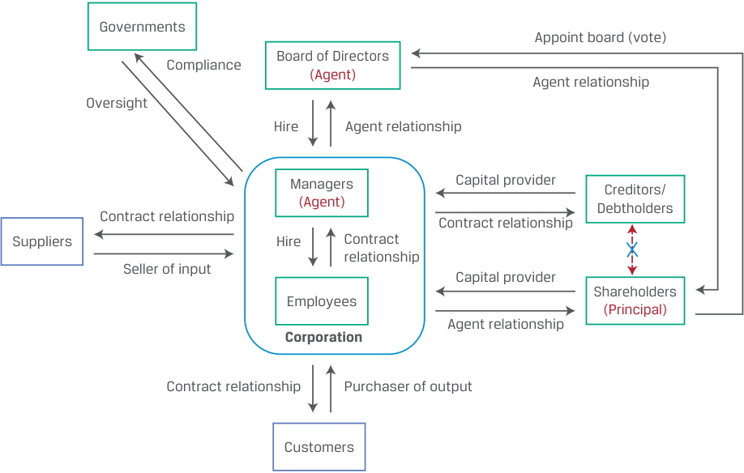
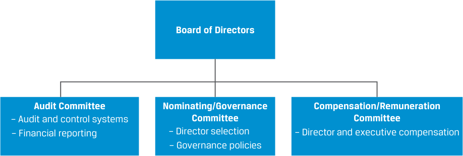

[Toàn Chương] LM03 — Learning Module 3 Corporate Governance: Conflicts, Mechanisms, Risks, and Benefits
Volume 3: Corporate Issuers
Learning Module 3 Corporate Governance: Conflicts, Mechanisms, Risks, and Benefits
Part 1/3: Introduction (PDF Pages 75–83)
Tập 3: Tổ chức phát hành doanh nghiệp (Corporate Issuers)
Học phần 3: Quản trị công ty: Xung đột, Cơ chế, Rủi ro và Lợi ích (Corporate Governance: Conflicts, Mechanisms, Risks, and Benefits)
Phần 1/3: Giới thiệu (Introduction) (Trang PDF 75–83)
L E A R N I N G M O D U L E
H Ọ C P H Ầ N (L E A R N I N G M O D U L E)
3
3
Corporate Governance: Conflicts, Mechanisms, Risks, and Benefits
Quản trị công ty: Xung đột, Cơ chế, Rủi ro và Lợi ích (Corporate Governance: Conflicts, Mechanisms, Risks, and Benefits)
LEARNING OUTCOMES
MỤC TIÊU HỌC TẬP (LEARNING OUTCOMES)
Mastery The candidate should be able to: describe the principal-agent relationship and conflicts that may arise between stakeholder groups describe corporate governance and mechanisms to manage stakeholder relationships and mitigate associated risks describe potential risks of poor corporate governance and stakeholder management and benefits of effective corporate governance and stakeholder management
Thành thạo – Ứng viên cần có khả năng: - Mô tả mối quan hệ người ủy thác – người đại diện (principal-agent relationship) và những xung đột có thể phát sinh giữa các nhóm bên liên quan (stakeholder groups) - Mô tả quản trị công ty (corporate governance) và các cơ chế để quản lý mối quan hệ với các bên liên quan cũng như giảm thiểu các rủi ro đi kèm - Mô tả các rủi ro tiềm tàng của việc quản trị công ty và quản lý các bên liên quan yếu kém, cũng như những lợi ích của việc quản trị công ty và quản lý các bên liên quan hiệu quả
INTRODUCTION
GIỚI THIỆU (INTRODUCTION)
Corporations are complex structures with stakeholders beyond owners, lenders, and managers. Corporate governance involves the creation and maintenance of a system of checks, balances, and incentives that addresses conflicting interests among these stakeholders. In this Learning Module, we first identify key aspects of the relationships between these parties and the potential conflicts that may arise. In the second lesson, we turn to the various mechanisms established to manage these conflicts, settle disputes, and mitigate risk. Finally, we highlight the benefits of strong corporate governance and stakeholder management policies as well as the risks of weak policies and their potential impact on corporate performance.
Công ty cổ phần (corporations) là những cấu trúc phức tạp với các bên liên quan (stakeholders) nằm ngoài phạm vi chủ sở hữu, bên cho vay và nhà quản lý. Quản trị công ty (corporate governance) bao gồm việc thiết lập và duy trì một hệ thống kiểm soát, cân bằng và khuyến khích (system of checks, balances, and incentives) nhằm giải quyết các lợi ích xung đột giữa những bên liên quan này. Trong Học phần này, trước hết chúng ta xác định các khía cạnh chính của mối quan hệ giữa các bên này và những xung đột tiềm tàng có thể phát sinh. Trong bài học thứ hai, chúng ta chuyển sang tìm hiểu các cơ chế khác nhau được thiết lập để quản lý những xung đột này, giải quyết tranh chấp và giảm thiểu rủi ro. Cuối cùng, chúng ta làm nổi bật những lợi ích của các chính sách quản trị công ty và quản lý các bên liên quan vững mạnh, cũng như những rủi ro của các chính sách yếu kém và tác động tiềm tàng của chúng lên kết quả hoạt động của doanh nghiệp.
LEARNING MODULE OVERVIEW
TỔNG QUAN HỌC PHẦN (LEARNING MODULE OVERVIEW)
- A principal-agent relationship is created when one party (a principal) hires another party (an agent) to perform a task or service. The relationship can exist with or without a contract. The agent is expected to act in the principal’s best interest.
- Một mối quan hệ người ủy thác – người đại diện (principal-agent relationship) được hình thành khi một bên (người ủy thác / chủ sở hữu – principal) thuê một bên khác (người đại diện / người thừa hành – agent) thực hiện một nhiệm vụ hoặc dịch vụ. Mối quan hệ này có thể tồn tại có hoặc không có hợp đồng. Người đại diện được kỳ vọng sẽ hành động vì lợi ích tốt nhất của người ủy thác.
-
In many cases, the agent possesses more information than the principal, and conflicts arise where the interests of the principal and the agent diverge. In a corporation, shareholders are a principal and elect directors (an agent), who appoint managers (another agent), who are charged with maximizing shareholder value.
-
Given the complex ecosystem of stakeholders in a corporation, the rights, responsibilities, and powers of each stakeholder must be considered when establishing an appropriate governance structure by striking a balance among the interests of these groups while meeting corporate objectives.
-
A sound governance structure consists of mechanisms to ensure adherence to rules and regulations imposed by external authorities as well as to meet the unique requirements of internal stakeholders. These mechanisms include financial reporting, general and extraordinary meetings, compensation, debt covenants, and more.
-
Weak corporate governance, unmanaged conflicts of interest, or inadequate stakeholder management can place firms at a competitive disadvantage. Strong governance practices and a proper balance among stakeholders’ interests are often reflected in increased competitiveness and operational efficiency, better control processes, and improved performance.
-
Trong nhiều trường hợp, người đại diện nắm giữ nhiều thông tin hơn người ủy thác, và xung đột phát sinh ở những nơi mà lợi ích của người ủy thác và người đại diện khác biệt nhau. Trong một công ty cổ phần, cổ đông là người ủy thác (principal) và bầu ra các thành viên hội đồng quản trị (một người đại diện – agent), những người này sẽ bổ nhiệm các nhà quản lý (một người đại diện khác – another agent) được giao nhiệm vụ tối đa hóa giá trị cổ đông.
-
Xét đến hệ sinh thái phức tạp của các bên liên quan trong một công ty cổ phần, quyền hạn, trách nhiệm và quyền lực của từng bên liên quan phải được xem xét khi thiết lập một cấu trúc quản trị phù hợp bằng cách tạo ra sự cân bằng giữa lợi ích của các nhóm này đồng thời đáp ứng các mục tiêu của doanh nghiệp.
-
Một cấu trúc quản trị lành mạnh bao gồm các cơ chế nhằm đảm bảo sự tuân thủ các quy tắc và quy định do các cơ quan có thẩm quyền bên ngoài áp đặt, cũng như đáp ứng các yêu cầu đặc thù của các bên liên quan nội bộ. Các cơ chế này bao gồm báo cáo tài chính (financial reporting), đại hội đồng cổ đông thường niên và bất thường (general and extraordinary meetings), chế độ đãi ngộ (compensation), các điều khoản ràng buộc nợ (debt covenants), và nhiều cơ chế khác.
-
Quản trị công ty yếu kém, các xung đột lợi ích không được quản lý, hoặc việc quản lý các bên liên quan không thỏa đáng có thể đặt doanh nghiệp vào thế bất lợi cạnh tranh. Các thông lệ quản trị vững mạnh và sự cân bằng hợp lý giữa lợi ích của các bên liên quan thường được phản ánh qua năng lực cạnh tranh và hiệu quả hoạt động tăng lên, quy trình kiểm soát tốt hơn, và kết quả hoạt động được cải thiện.
LEARNING MODULE SELF-ASSESSMENT
TỰ ĐÁNH GIÁ HỌC PHẦN (LEARNING MODULE SELF-ASSESSMENT)
These initial questions are intended to help you gauge your current level of understanding of this learning module.
Các câu hỏi ban đầu này nhằm giúp bạn tự đánh giá mức độ hiểu biết hiện tại của mình về học phần này.
- The following statements relate to the ecosystem of stakeholders in a corporation. Complete each statement by selecting one of the following: agent, principal, contractual, principal-agent, employer-employee
- Các phát biểu sau đây liên quan đến hệ sinh thái các bên liên quan trong một công ty cổ phần. Hãy hoàn thành mỗi phát biểu bằng cách chọn một trong các thuật ngữ sau: người đại diện (agent), người ủy thác (principal), theo hợp đồng (contractual), người ủy thác – người đại diện (principal-agent), người sử dụng lao động – người lao động (employer-employee).
In a corporation, the board of directors is elected to act as a(n
Trong một công ty cổ phần, hội đồng quản trị được bầu ra để hành động với tư cách là một ____.
____.
Trong một công ty cổ phần, cổ đông là một ____.
In a corporation, shareholders are a(n) ____.
Customers have a(n) ____ relationship with a corporate issuer.
Khách hàng có một mối quan hệ ____ với một tổ chức phát hành doanh nghiệp.
Solution:
Lời giải:
In a corporation, the board of directors is elected to act as an agent. In a corporation, shareholders are a principal.
Trong một công ty cổ phần, hội đồng quản trị được bầu ra để hành động với tư cách là một người đại diện (agent). Trong một công ty cổ phần, cổ đông là một người ủy thác (principal).
Customers have a contractual relationship with a corporate issuer.
Khách hàng có một mối quan hệ theo hợp đồng (contractual) với một tổ chức phát hành doanh nghiệp.
- Conflicts arise where the interests of a principal and an agent diverge, resulting in agency costs. Identify and explain an example of an agency cost for a corporate issuer.
- Xung đột phát sinh ở những nơi mà lợi ích của người ủy thác và người đại diện khác biệt nhau, dẫn đến chi phí đại diện (agency costs). Hãy xác định và giải thích một ví dụ về chi phí đại diện đối với một tổ chức phát hành doanh nghiệp.
Solution :
Lời giải:
An example of an agency cost for public companies is the cost of hiring an external independent auditor for the financial statements and internal controls. Audit fees are paid by the issuer, a cost borne by the shareholders,
Một ví dụ về chi phí đại diện đối với các công ty đại chúng là chi phí thuê một kiểm toán viên độc lập bên ngoài (external independent auditor) để kiểm toán báo cáo tài chính và hệ thống kiểm soát nội bộ. Phí kiểm toán do tổ chức phát hành chi trả – đây là một khoản chi phí do các cổ đông gánh chịu –
to mitigate the risk that financial reports are materially misstated or deviate from generally accepted accounting principles.
nhằm giảm thiểu rủi ro báo cáo tài chính bị sai sót trọng yếu hoặc đi chệch khỏi các nguyên tắc kế toán được chấp nhận chung (generally accepted accounting principles).
| 3. Match the mecha applicable stakeh |
nism to manage relationships or settle disputes with the older |
|---|---|
| 1. Shareholders | A. Ad hoc committee |
| 2. Creditors | B. Proxy contest |
| 3. Management | C. Stock-based compensation |
| Solution: | |
| 1. B is correct. Pr changes in corpo |
oxy contests are one mechanism for shareholders to pursue rate control. |
- Ghép cơ chế quản lý mối quan hệ hoặc giải quyết tranh chấp với bên liên quan tương ứng:
-
A is correct. When a company is struggling to meet its debt obligations, an ad hoc committee may be formed by a group of bondholders to approach the company with potential options to restructure their bonds.
-
C is correct. Stock-based compensation seeks to align the interests of management and shareholders.
-
A(n) ____ may be called when requested by a specific minimum number of calling shareholders, as detailed in the company’s bylaws or charter.
| Bên liên quan | Cơ chế |
|---|---|
| 1. Cổ đông (Shareholders) | A. Ủy ban đặc trách (Ad hoc committee) |
| 2. Chủ nợ (Creditors) | B. Cuộc chiến ủy quyền (Proxy contest) |
| 3. Ban giám đốc (Management) | C. Đãi ngộ dựa trên cổ phiếu (Stock-based compensation) |
Lời giải:
Solution :
- B là đáp án đúng. Cuộc chiến ủy quyền (proxy contests) là một cơ chế để các cổ đông theo đuổi những thay đổi trong quyền kiểm soát công ty.
- A là đáp án đúng. Khi một công ty đang gặp khó khăn trong việc đáp ứng các nghĩa vụ nợ của mình, một ủy ban đặc trách (ad hoc committee) có thể được thành lập bởi một nhóm các trái chủ để tiếp cận công ty với các phương án tiềm năng nhằm tái cơ cấu trái phiếu của họ.
-
C là đáp án đúng. Đãi ngộ dựa trên cổ phiếu (stock-based compensation) tìm cách gắn kết lợi ích của ban giám đốc và cổ đông.
-
Một ____ có thể được triệu tập khi có yêu cầu của một số lượng cổ đông tối thiểu cụ thể, như được quy định chi tiết trong quy chế hoạt động (bylaws) hoặc điều lệ (charter) của công ty.
An extraordinary general meeting (EGM) may be called when requested by a specific minimum number of calling shareholders, as detailed in the company’s bylaws or charter.
Lời giải:
- Studies have shown that improvements in corporate governance practices __ (increase/decrease) the likelihood of a credit rating __ (upgrade/downgrade), which tends to ____ (increase/decrease) the cost of debt.
- Solution :
Một đại hội đồng cổ đông bất thường (extraordinary general meeting – EGM) có thể được triệu tập khi có yêu cầu của một số lượng cổ đông triệu tập tối thiểu cụ thể, như được quy định chi tiết trong quy chế hoạt động hoặc điều lệ của công ty.
Studies have shown that improvements in corporate governance practices increase the likelihood of a credit rating upgrade, which tends to decrease the cost of debt.
- Các nghiên cứu đã chỉ ra rằng những cải thiện trong thông lệ quản trị công ty làm __ (tăng/giảm) khả năng được __ (nâng bậc/hạ bậc) xếp hạng tín nhiệm, điều này có xu hướng làm ____ (tăng/giảm) chi phí nợ vay.
- Lời giải:
- What types of questions should analysts consider about a company’s corporate governance and stakeholder management?
Các nghiên cứu đã chỉ ra rằng những cải thiện trong thông lệ quản trị công ty làm tăng (increase) khả năng được nâng bậc (upgrade) xếp hạng tín nhiệm, điều này có xu hướng làm giảm (decrease) chi phí nợ vay.
Solution:
- Các chuyên gia phân tích nên xem xét những loại câu hỏi nào về quản trị công ty và quản lý các bên liên quan của một công ty?
Lời giải:
Key questions analysts should consider about a company’s corporate governance and stakeholder management include the following:
Các câu hỏi chính mà các chuyên gia phân tích nên xem xét về quản trị công ty và quản lý các bên liên quan của một công ty bao gồm:
-
What is the company’s ownership and voting structure?
-
How well do board members’ skills and experience match the current and future needs of the company?
-
How closely does the management team’s compensation and incentive structure align with factors expected to drive overall company results?
-
Who are the significant investors in the company?
-
How strong are company shareholder rights versus its peers?
- Cơ cấu sở hữu và cơ cấu biểu quyết của công ty là gì?
- Kỹ năng và kinh nghiệm của các thành viên hội đồng quản trị phù hợp đến mức nào với nhu cầu hiện tại và tương lai của công ty?
- Cấu trúc đãi ngộ và khuyến khích của đội ngũ quản lý gắn kết chặt chẽ đến mức nào với các yếu tố được kỳ vọng sẽ thúc đẩy kết quả tổng thể của công ty?
- Ai là những nhà đầu tư lớn trong công ty?
- Quyền của cổ đông công ty mạnh đến đâu khi so sánh với các doanh nghiệp cùng ngành?
■ How effective has management been in taking a long-term perspective on risks and sustainability?
- Ban giám đốc đã hiệu quả như thế nào trong việc áp dụng tầm nhìn dài hạn đối với các rủi ro và tính bền vững?
2
2
STAKEHOLDER CONFLICTS AND MANAGEMENT
XUNG ĐỘT VÀ QUẢN LÝ CÁC BÊN LIÊN QUAN (STAKEHOLDER CONFLICTS AND MANAGEMENT)
describe the principal-agent relationship and conflicts that may arise between stakeholder groups
- Mô tả mối quan hệ người ủy thác – người đại diện và những xung đột có thể phát sinh giữa các nhóm bên liên quan (describe the principal-agent relationship and conflicts that may arise between stakeholder groups)
A corporation is a legal entity with a complex ecosystem of stakeholders. Corporate stakeholder relationships include contractual, principal-agent, and other relationships as illustrated in Exhibit 1.
Một công ty cổ phần là một thực thể pháp lý với một hệ sinh thái phức tạp gồm các bên liên quan. Các mối quan hệ giữa các bên liên quan trong doanh nghiệp bao gồm mối quan hệ theo hợp đồng (contractual), mối quan hệ người ủy thác – người đại diện (principal-agent), và các mối quan hệ khác như được minh họa trong Bảng 1 (Exhibit 1).
Exhibit 1: Principal-Agent and Other Relationships
Bảng 1 (Exhibit 1): Mối quan hệ Người ủy thác – Người đại diện và các mối quan hệ khác (Principal-Agent and Other Relationships)

Chú thích hình ảnh: Hệ sinh thái các mối quan hệ quanh Công ty cổ phần (Corporation): - Cổ đông (Shareholders – Người ủy thác / Principal): Là nhà cung cấp vốn (Capital provider), bầu chọn (bỏ phiếu) Hội đồng quản trị (Board of Directors – Người đại diện / Agent) theo mối quan hệ đại diện (Agent relationship). - Hội đồng quản trị (Board of Directors – Agent): Thuê và giám sát các Nhà quản lý (Managers – Agent) theo mối quan hệ đại diện; các Nhà quản lý thuê Nhân viên (Employees) và đại diện cho công ty theo mối quan hệ đại diện. - Chủ nợ (Creditors/Debtholders): Là nhà cung cấp vốn theo mối quan hệ hợp đồng (Contract relationship). - Nhà cung cấp (Suppliers): Người bán đầu vào (Seller of input) theo mối quan hệ hợp đồng (Contract relationship). - Khách hàng (Customers): Người mua đầu ra (Purchaser of output) theo mối quan hệ hợp đồng (Contract relationship). - Chính phủ (Governments): Thực hiện Giám sát (Oversight) và nhận sự Tuân thủ (Compliance) từ Công ty cổ phần.
A principal-agent relationship (or agency relationship) is created when one party (a principal) hires another party (an agent) to perform a task or service and can be present with or without a contract governing the relationship. An agent is expected to act in the principal’s best interest, and the relationship involves trust and expectations of loyalty and diligence. In many cases, the agent possesses more information than the principal, which means that the principal is often unable to directly verify that the agent is acting in the principal’s best interest. Conflicts arise where the interests of the principal and agent diverge, resulting in agency costs , which can be direct, such as the costs of hiring monitoring agents (e.g., a board of directors hiring an auditor), or indirect, like the forgone profits and economic benefits of lost opportunities.
Một mối quan hệ người ủy thác – người đại diện (principal-agent relationship) (hay quan hệ đại diện – agency relationship) được tạo ra khi một bên (người ủy thác – principal) thuê một bên khác (người đại diện – agent) để thực hiện một nhiệm vụ hoặc dịch vụ, và có thể hiện diện có hoặc không có một hợp đồng điều chỉnh mối quan hệ đó. Người đại diện được kỳ vọng sẽ hành động vì lợi ích tốt nhất của người ủy thác, và mối quan hệ này bao hàm sự tin tưởng cũng như những kỳ vọng về lòng trung thành (loyalty) và sự mẫn cán (diligence). Trong nhiều trường hợp, người đại diện nắm giữ nhiều thông tin hơn người ủy thác, điều đó có nghĩa là người ủy thác thường không thể trực tiếp xác minh xem liệu người đại diện có đang hành động vì lợi ích tốt nhất của người ủy thác hay không. Xung đột phát sinh ở những nơi mà lợi ích của người ủy thác và người đại diện khác biệt nhau, dẫn đến chi phí đại diện (agency costs), có thể là chi phí trực tiếp, chẳng hạn như chi phí thuê các bên giám sát (ví dụ: hội đồng quản trị thuê kiểm toán viên), hoặc chi phí gián tiếp, như phần lợi nhuận bị mất đi và các lợi ích kinh tế của những cơ hội bị bỏ lỡ.
In a corporation, shareholders are a principal and elect directors (an agent), who are expected to pursue shareholders’ interests by hiring managers (another agent) to maximize shareholder value. Shareholders and lenders demand higher returns and
Trong một công ty cổ phần, các cổ đông là người ủy thác (principal) và bầu ra các thành viên hội đồng quản trị (một người đại diện – agent), những người được kỳ vọng sẽ theo đuổi lợi ích của cổ đông bằng cách thuê các nhà quản lý (một người đại diện khác – another agent) nhằm tối đa hóa giá trị cổ đông. Các cổ đông và bên cho vay sẽ yêu cầu tỷ suất sinh lợi và
risk premiums when faced with greater information asymmetry due to the greater potential for conflicts of interest. Principal-agent relationships and potential conflicts arise in several areas within corporations.
phần bù rủi ro (risk premiums) cao hơn khi phải đối mặt với tình trạng bất cân xứng thông tin lớn hơn do tiềm ẩn khả năng xung đột lợi ích cao hơn. Mối quan hệ người ủy thác – người đại diện và những xung đột tiềm tàng phát sinh ở một số lĩnh vực trong nội bộ các công ty cổ phần.
Shareholder, Board Director, and Manager Relationships
Mối quan hệ giữa Cổ đông, Thành viên Hội đồng quản trị và Nhà quản lý (Shareholder, Board Director, and Manager Relationships)
Directors and managers have more information about a company’s performance, risks, and investment opportunities than outsiders such as shareholders and lenders. This information asymmetry lowers shareholders’ ability to assess the performance of directors and managers, weakening their capacity to identify and dismiss poor performers. While all companies have some degree of asymmetric information, it is more pronounced for companies competing in many markets and geographies, those that sell complex products, and companies with lower levels of institutional ownership and free float.
Các thành viên hội đồng quản trị và các nhà quản lý có nhiều thông tin về kết quả hoạt động, rủi ro và các cơ hội đầu tư của công ty hơn những người bên ngoài như cổ đông và bên cho vay. Sự bất cân xứng thông tin (information asymmetry) này làm giảm khả năng của cổ đông trong việc đánh giá kết quả làm việc của các thành viên hội đồng quản trị và các nhà quản lý, làm suy yếu năng lực của họ trong việc nhận diện và sa thải những người có năng lực yếu kém. Mặc dù tất cả các công ty đều có một mức độ thông tin bất cân xứng nhất định, nhưng tình trạng này thể hiện rõ nét hơn đối với những công ty cạnh tranh trên nhiều thị trường và khu vực địa lý, những công ty bán các sản phẩm phức tạp, và những công ty có tỷ lệ sở hữu của nhà đầu tư tổ chức cũng như tỷ lệ cổ phiếu tự do chuyển nhượng (free float) thấp hơn.
In practice, compensation is the principal tool used to align the interests of management and shareholders. While management compensation seeks to motivate managers to maximize shareholder value, manager and shareholder interests may diverge in the following common ways:
Trên thực tế, chế độ đãi ngộ (compensation) là công cụ chính được sử dụng để gắn kết lợi ích của ban giám đốc và cổ đông. Mặc dù đãi ngộ dành cho ban giám đốc tìm cách tạo động lực để các nhà quản lý tối đa hóa giá trị cổ đông, nhưng lợi ích của nhà quản lý và cổ đông vẫn có thể khác biệt nhau theo những cách phổ biến sau đây:
-
Insufficient effort. Managers may be unable or unwilling to make investments, manage costs appropriately, or make hard decisions like shutting down unprofitable business lines. They may conduct too little monitoring of employees or assert too little control, leading to unintentional risks and litigation. Finally, managers may allocate too little time to their role because they are committed to political or charitable activities, personal investments, or serving as directors or managers of other companies.
-
Inappropriate risk appetite. Compensation dominated by stock grants and options can motivate excessive management risk-taking, as option holders participate only in upside share price moves. Similarly, little or no use of stock grants and options in compensation plans can lead to unduly risk-averse corporate decision-making and the inability to attract talent. This misalignment may be at odds with the company’s value creation objective or shareholders’ desire for higher-risk, higher-reward endeavors. Since investors can hold diversified portfolios, they may have a higher risk tolerance than managers, whose reputation and time are concentrated in a single company.
-
Empire building. Management compensation and status are typically tied to business size (e.g., total revenues, number of employees), which can incentivize managers to seek “growth for growth’s sake,” such as acquisitions that do not increase shareholder value.
-
Entrenchment. Directors and managers want to retain their jobs. Tactics to do so include copying competitors and peers, avoiding risks, and pursuing complicated transactions and restructurings that they are uniquely suited to manage. Directors may avoid speaking out against management, even if speaking out is in the interest of shareholders or other stakeholders.
-
Self-dealing. Managers may exploit firm resources to maximize personal benefits, such as excessive perquisites (private airplanes, club memberships, personal security), or defraud investors by misappropriating assets. The smaller a manager’s stake in the company, the less they bear these costs themselves, reducing their desire to maximize firm value.
- Nỗ lực không đầy đủ (Insufficient effort). Các nhà quản lý có thể không có khả năng hoặc không sẵn lòng thực hiện các khoản đầu tư, quản lý chi phí một cách thích hợp, hoặc đưa ra những quyết định khó khăn như đóng cửa các mảng kinh doanh không có lãi. Họ có thể thực hiện quá ít việc giám sát nhân viên hoặc thực thi quá ít sự kiểm soát, dẫn đến những rủi ro ngoài ý muốn và các vụ kiện tụng. Cuối cùng, các nhà quản lý có thể dành quá ít thời gian cho vai trò của mình bởi vì họ bận tâm đến các hoạt động chính trị hoặc từ thiện, các khoản đầu tư cá nhân, hoặc phục vụ với tư cách là thành viên hội đồng quản trị hay nhà quản lý của các công ty khác.
- Khẩu vị rủi ro không phù hợp (Inappropriate risk appetite). Chế độ đãi ngộ bị chi phối quá nhiều bởi việc thưởng cổ phiếu (stock grants) và quyền chọn cổ phiếu (stock options) có thể thúc đẩy ban giám đốc chấp nhận rủi ro quá mức, bởi vì những người nắm giữ quyền chọn chỉ tham gia hưởng lợi khi giá cổ phiếu biến động tăng. Tương tự, việc sử dụng quá ít hoặc không sử dụng cổ phiếu thưởng và quyền chọn trong các kế hoạch đãi ngộ có thể dẫn đến việc ra quyết định doanh nghiệp quá ngại rủi ro (unduly risk-averse) và không có khả năng thu hút nhân tài. Sự lệch pha này có thể đi ngược lại mục tiêu tạo dựng giá trị của công ty hoặc mong muốn của các cổ đông đối với những dự án có rủi ro cao hơn và phần thưởng cao hơn. Bởi vì các nhà đầu tư có thể nắm giữ các danh mục đầu tư đã được đa dạng hóa, họ có thể có mức độ chấp nhận rủi ro (risk tolerance) cao hơn so với các nhà quản lý – những người mà danh tiếng và thời gian của họ đều tập trung vào một công ty duy nhất.
- Xây dựng đế chế (Empire building). Thù lao và vị thế của ban giám đốc thường gắn liền với quy mô kinh doanh (ví dụ: tổng doanh thu, số lượng nhân viên), điều này có thể khuyến khích các nhà quản lý tìm kiếm “sự tăng trưởng vì bản thân sự tăng trưởng” (“growth for growth’s sake”), chẳng hạn như thực hiện các thương vụ mua lại không làm tăng giá trị cho cổ đông.
- Cố thủ vị trí (Entrenchment). Các thành viên hội đồng quản trị và các nhà quản lý đều muốn giữ vững công việc của mình. Các chiến thuật để làm điều đó bao gồm sao chép các đối thủ cạnh tranh và các công ty cùng ngành, né tránh rủi ro, và theo đuổi các giao dịch cũng như các đợt tái cơ cấu phức tạp mà chỉ riêng họ mới có đủ điều kiện phù hợp để quản lý. Các thành viên hội đồng quản trị có thể né tránh việc lên tiếng phản đối ban giám đốc, ngay cả khi việc lên tiếng đó là vì lợi ích của các cổ đông hoặc các bên liên quan khác.
- Tư lợi cá nhân (Self-dealing). Các nhà quản lý có thể khai thác các nguồn lực của doanh nghiệp để tối đa hóa lợi ích cá nhân, chẳng hạn như hưởng thụ bổng lộc quá mức (excessive perquisites: máy bay riêng, thẻ thành viên câu lạc bộ, an ninh cá nhân), hoặc lừa đảo các nhà đầu tư bằng cách biển thủ tài sản (misappropriating assets). Tỷ lệ sở hữu của một nhà quản lý trong công ty càng nhỏ, thì chính họ càng ít phải gánh chịu những chi phí này, làm giảm mong muốn tối đa hóa giá trị doanh nghiệp của họ.
KNOWLEDGE CHECK: SHAREHOLDER AND MANAGER/ DIRECTOR RELATIONSHIPS
KIỂM TRA KIẾN THỨC: MỐI QUAN HỆ GIỮA CỔ ĐÔNG VÀ NHÀ QUẢN LÝ / THÀNH VIÊN HỘI ĐỒNG QUẢN TRỊ (KNOWLEDGE CHECK: SHAREHOLDER AND MANAGER/DIRECTOR RELATIONSHIPS)
- A construction firm has the opportunity to invest in a high-risk, high-reward capital infrastructure project. Which of the following could be a reason why the company decides not to pursue the project?
-
A. The compensation of managers is closely tied to the size of the company’s business.
-
B. Management receives excessive all-cash compensation.
-
C. Management has recently received a generous options reward in the company’s shares.
- Một doanh nghiệp xây dựng có cơ hội đầu tư vào một dự án cơ sở hạ tầng có rủi ro cao và phần thưởng cao. Điều nào sau đây có thể là lý do khiến công ty quyết định không theo đuổi dự án này?
- A. Thù lao của các nhà quản lý gắn liền chặt chẽ với quy mô kinh doanh của công ty.
- B. Ban giám đốc nhận được mức thù lao hoàn toàn bằng tiền mặt quá cao.
- C. Ban giám đốc gần đây đã nhận được một khoản thưởng quyền chọn hào phóng bằng cổ phiếu của công ty.
Solution:
Lời giải:
B is correct. When compensation—particularly if it is excessive—is entirely in cash, the risk tolerance of managers may be too low, as they are inclined to protect their cash compensation. Additionally, there may be little upside for them if the project performs well.
B là đáp án đúng. Khi chế độ đãi ngộ — đặc biệt nếu nó quá cao — hoàn toàn bằng tiền mặt, mức độ chấp nhận rủi ro của các nhà quản lý có thể quá thấp, bởi vì họ có xu hướng bảo vệ khoản thu nhập bằng tiền mặt của mình. Ngoài ra, có thể có rất ít lợi ích tăng thêm (upside) dành cho họ nếu dự án hoạt động tốt.
A is incorrect, as it describes the “empire building” phenomenon that would likely result in the decision to grow the company at any cost in an attempt to secure higher compensation.
A sai, vì nó mô tả hiện tượng “xây dựng đế chế” (“empire building”) vốn nhiều khả năng sẽ dẫn đến quyết định phát triển quy mô công ty bằng mọi giá nhằm tìm cách đảm bảo mức thù lao cao hơn.
C is incorrect, as it would likely lead to an alignment of managers’ interests with those of shareholders.
C sai, vì điều này nhiều khả năng sẽ dẫn đến sự gắn kết lợi ích của các nhà quản lý với lợi ích của các cổ đông.
Controlling and Minority Shareholder Relationships
Mối quan hệ giữa Cổ đông kiểm soát và Cổ đông thiểu số (Controlling and Minority Shareholder Relationships)
Corporate ownership is generally classified as dispersed or concentrated. Dispersed ownership involves many shareholders, none of whom can exercise control over the corporation. In contrast, concentrated ownership reflects an individual shareholder or a group (known as controlling shareholders ), who can exercise control over the corporation. The group may involve a family, another company (or companies), or government.
Quyền sở hữu công ty cổ phần nhìn chung được phân loại là phân tán (dispersed) hoặc tập trung (concentrated). Sở hữu phân tán bao gồm nhiều cổ đông, không ai trong số đó có thể thực thi quyền kiểm soát đối với công ty cổ phần. Ngược lại, sở hữu tập trung phản ánh một cổ đông cá nhân hoặc một nhóm cổ đông (được gọi là các cổ đông kiểm soát – controlling shareholders), những người có thể thực thi quyền kiểm soát đối với công ty cổ phần. Nhóm này có thể bao gồm một gia đình, một công ty (hoặc các công ty) khác, hoặc chính phủ.
While we have been discussing shareholders as a homogeneous group with shared interests, in fact shareholders are often a heterogeneous group with different interests, such as a founding family with a large percentage of their wealth held in company stock who thus desire management to diversify the company to achieve stability. This desire would be at odds with that of minority shareholders who hold diversified portfolios and would prefer that management focus on maximizing shareholder value, as they can diversify cheaply on their own. Conversely, a controlling shareholder may also be a long-term shareholder with a multi-year or multi-decade perspective, while some minority shareholders may seek quick gains from cost cutting, selling assets, or share repurchases. Shareholders can communicate with one another and form voting blocs to advocate for their interests more effectively.
Mặc dù chúng ta vừa thảo luận về các cổ đông như một nhóm đồng nhất (homogeneous group) có chung lợi ích, nhưng trên thực tế các cổ đông thường là một nhóm không đồng nhất (heterogeneous group) với những lợi ích khác nhau, chẳng hạn như một gia đình sáng lập có tỷ trọng lớn tài sản của họ nằm ở cổ phiếu công ty và do đó mong muốn ban giám đốc đa dạng hóa công ty để đạt được sự ổn định. Mong muốn này sẽ mâu thuẫn với mong muốn của các cổ đông thiểu số (minority shareholders) – những người nắm giữ các danh mục đầu tư đã được đa dạng hóa và muốn ban giám đốc tập trung vào việc tối đa hóa giá trị cổ đông, bởi vì bản thân họ có thể tự đa dạng hóa một cách ít tốn kém. Ngược lại, một cổ đông kiểm soát cũng có thể là một cổ đông dài hạn với tầm nhìn nhiều năm hoặc nhiều thập kỷ, trong khi một số cổ đông thiểu số có thể tìm kiếm những khoản lợi nhuận nhanh chóng từ việc cắt giảm chi phí, bán tài sản hoặc mua lại cổ phiếu quỹ (share repurchases). Các cổ đông có thể giao tiếp với nhau và hình thành các khối biểu quyết (voting blocs) để bảo vệ lợi ích của mình một cách hiệu quả hơn.
Share ownership percentages alone may not necessarily reflect whether company control is dispersed or concentrated. Differences in shareholder voting schemes, as well as a share class with different voting rights, give rise to varying degrees of control among shareholders. In contrast to a simple structure of one vote per shareholder, a dual-class structure involves one share class (e.g., Class A) that carries one vote per share and is publicly held and traded and another share class (e.g., Class B) that carries several votes per share and is held exclusively by company insiders or founders. A dual-class structure allows certain stakeholders to effectively control the company
Chỉ riêng tỷ lệ phần trăm sở hữu cổ phiếu có thể không nhất thiết phản ánh liệu quyền kiểm soát công ty là phân tán hay tập trung. Sự khác biệt trong các cơ chế biểu quyết của cổ đông, cũng như việc có một hạng cổ phiếu (share class) với quyền biểu quyết khác biệt, làm phát sinh các mức độ kiểm soát khác nhau giữa các cổ đông. Trái ngược với cấu trúc đơn giản gồm một phiếu bầu cho mỗi cổ phiếu, cấu trúc cổ phiếu hai hạng (dual-class structure) bao gồm một hạng cổ phiếu (ví dụ: Hạng A – Class A) mang một quyền biểu quyết trên mỗi cổ phiếu và được nắm giữ cũng như giao dịch công khai, và một hạng cổ phiếu khác (ví dụ: Hạng B – Class B) mang nhiều quyền biểu quyết trên mỗi cổ phiếu và chỉ được nắm giữ độc quyền bởi những người nội bộ công ty hoặc những người sáng lập. Cấu trúc cổ phiếu hai hạng cho phép một số bên liên quan nhất định kiểm soát công ty trên thực tế
even if they do not hold most of the shares outstanding. These stakeholders—who can avoid voting-power dilution if new shares are issued—control board elections, strategic decisions, and all other significant matters. CFA Institute has long advocated against dual-class structures, because they permit one group of shareholders to have disproportionate power and potentially override the will of the majority for their own personal interest. In cases where dual-class structures are legal, CFA Institute advises issuers to clearly disclose such arrangements and their implications for investors. For more on CFA Institute’s advocacy on this and other corporate governance topics, visit www .cfainstitute .org/ advocacy.
ngay cả khi họ không nắm giữ phần lớn số cổ phiếu đang lưu hành. Những bên liên quan này — những người có thể tránh được sự pha loãng quyền biểu quyết nếu cổ phiếu mới được phát hành — kiểm soát các cuộc bầu cử hội đồng quản trị, các quyết định chiến lược và tất cả các vấn đề quan trọng khác. Viện CFA (CFA Institute) từ lâu đã lên tiếng phản đối các cấu trúc cổ phiếu hai hạng, bởi vì chúng cho phép một nhóm cổ đông có quyền lực không tương xứng và có khả năng bác bỏ ý chí của đa số vì lợi ích cá nhân của riêng họ. Trong những trường hợp mà cấu trúc cổ phiếu hai hạng là hợp pháp, Viện CFA khuyên các tổ chức phát hành nên công bố rõ ràng những thỏa thuận như vậy và các hàm ý của chúng đối với nhà đầu tư. Để biết thêm về hoạt động vận động chính sách của Viện CFA đối với chủ đề này và các chủ đề quản trị công ty khác, hãy truy cập www.cfainstitute.org/advocacy.
Magna International Inc., a Canadian auto parts company, started off with two classes of shares. Class A shares had one vote per share, and Class B shares had 500 votes per share. The founder, Frank Stronach, and his family were able to control 75% of the voting rights while owning only 3% of the total shares by holding Class B shares. Investors were frustrated that the founder and members of his family secured millions in consulting fees, salaries, bonuses, and stock options despite weakness in the stock price. Shareholders voted for a single-class share structure in an extraordinary general meeting, creating an agreement that Stronach would leave the company after paying out CAD870 million over five years.
Magna International Inc., một công ty phụ tùng ô tô của Canada, đã khởi đầu với hai hạng cổ phiếu. Cổ phiếu Hạng A có một quyền biểu quyết trên mỗi cổ phiếu, và cổ phiếu Hạng B có tới 500 quyền biểu quyết trên mỗi cổ phiếu. Người sáng lập, ông Frank Stronach, cùng gia đình mình đã có thể kiểm soát 75% quyền biểu quyết trong khi chỉ sở hữu 3% tổng số cổ phiếu nhờ nắm giữ cổ phiếu Hạng B. Các nhà đầu tư đã rất bức xúc trước việc người sáng lập và các thành viên trong gia đình ông bỏ túi hàng triệu đô la phí tư vấn, tiền lương, tiền thưởng và quyền chọn cổ phiếu bất chấp sự suy yếu của giá cổ phiếu. Các cổ đông đã bỏ phiếu thông qua việc chuyển sang cấu trúc cổ phiếu một hạng duy nhất (single-class share structure) tại một đại hội đồng cổ đông bất thường, tạo ra một thỏa thuận theo đó ông Stronach sẽ rời khỏi công ty sau khi nhận khoản chi trả 870 triệu CAD trong vòng năm năm.
KNOWLEDGE CHECK: DUAL-CLASS SHARE STRUCTURE
KIỂM TRA KIẾN THỨC: CẤU TRÚC CỔ PHIẾU HAI HẠNG (KNOWLEDGE CHECK: DUAL-CLASS SHARE STRUCTURE)
- Which of the following best describes dual-class share structures?
-
A. Dual-class share structures can be easily changed over time.
-
B. Company founders can maintain significant power over the organization.
-
C. Conflicts of interest between management and stakeholder groups are less likely than with single-class share structures.
- Phát biểu nào sau đây mô tả đúng nhất về cấu trúc cổ phiếu hai hạng (dual-class share structures)?
- A. Cấu trúc cổ phiếu hai hạng có thể dễ dàng được thay đổi theo thời gian.
- B. Những người sáng lập công ty có thể duy trì quyền lực đáng kể đối với tổ chức.
- C. Xung đột lợi ích giữa ban giám đốc và các nhóm bên liên quan ít có khả năng xảy ra hơn so với cấu trúc cổ phiếu một hạng.
Solution:
Lời giải:
B is correct. Under dual-class share systems, company founders may control board elections, strategic decisions, and other significant matters. A is incorrect, because dual-class share systems are difficult to dismantle once adopted as the voting control within dual-class systems is held exclusively by company insiders or founders. C is incorrect, because conflicts of interest between management and stakeholders are more likely than with single-class share structures owing to the potential control element in dual-class systems.
B là đáp án đúng. Dưới hệ thống cổ phiếu hai hạng, những người sáng lập công ty có thể kiểm soát các cuộc bầu cử hội đồng quản trị, các quyết định chiến lược và các vấn đề quan trọng khác. A sai, bởi vì hệ thống cổ phiếu hai hạng rất khó bị xóa bỏ một khi đã được áp dụng do quyền kiểm soát biểu quyết trong hệ thống hai hạng được nắm giữ độc quyền bởi những người nội bộ công ty hoặc những người sáng lập. C sai, bởi vì xung đột lợi ích giữa ban giám đốc và các bên liên quan có nhiều khả năng xảy ra hơn so với cấu trúc cổ phiếu một hạng do yếu tố kiểm soát tiềm tàng trong hệ thống hai hạng.
Shareholder versus Creditor Interests
Lợi ích của Cổ đông so với Chủ nợ (Shareholder versus Creditor Interests)
Despite their financial claims to the same cash flows of a corporation, the difference in debt versus equity claims gives rise to potential conflicts of interest, as outlined in the previous module. For example, debtholders with a fixed claim tend to be risk averse and prefer that the corporation take actions to ensure sufficient cash flow to meet its debt obligations. For this reason, debtholders tend to prefer that a company raise more equity and limit shareholder distributions. Shareholders, however, tend to prefer greater leverage and shareholder distributions rather than dilutive equity issuance.
Mặc dù có các quyền đòi hỏi tài chính đối với cùng một dòng tiền của công ty cổ phần, nhưng sự khác biệt giữa quyền đòi hỏi của nợ và của vốn chủ sở hữu làm phát sinh những xung đột lợi ích tiềm tàng, như đã phác thảo trong học phần trước. Ví dụ, các chủ nợ với quyền đòi hỏi cố định có xu hướng ngại rủi ro (risk averse) và muốn công ty cổ phần thực hiện các hành động nhằm đảm bảo có đủ dòng tiền để đáp ứng các nghĩa vụ nợ của mình. Vì lý do này, các chủ nợ có xu hướng muốn công ty huy động thêm vốn chủ sở hữu và hạn chế các khoản phân phối cho cổ đông. Tuy nhiên, các cổ đông lại có xu hướng ưa thích đòn bẩy lớn hơn và các khoản phân phối cho cổ đông nhiều hơn thay vì phát hành vốn cổ phần gây pha loãng (dilutive equity issuance).
This potential conflict is greater for long-term debt, as the passage of time exposes debtholders to changes in business conditions, strategy, and management behavior. As a result, long-term creditors are more likely to impose contractual limits on leverage and shareholder distributions.
Sự xung đột tiềm tàng này càng lớn hơn đối với nợ dài hạn, bởi vì thời gian trôi qua khiến các chủ nợ phải tiếp xúc với những thay đổi trong điều kiện kinh doanh, chiến lược và hành vi của ban giám đốc. Do đó, các chủ nợ dài hạn có nhiều khả năng áp đặt các giới hạn theo hợp đồng đối với đòn bẩy và các khoản phân phối cho cổ đông.
KNOWLEDGE CHECK: STAKEHOLDER RELATIONSHIPS
KIỂM TRA KIẾN THỨC: MỐI QUAN HỆ GIỮA CÁC BÊN LIÊN QUAN (KNOWLEDGE CHECK: STAKEHOLDER RELATIONSHIPS)
- A controlling shareholder of Stillcreek Corporation owns 55% of Stillcreek’s shares, and the remaining shares are spread among a large group of shareholders. In this situation, conflicts of interest are most likely to arise between:
-
A. shareholders and bondholders.
-
B. the controlling shareholder and managers.
C. the controlling shareholder and minority shareholders.
- Một cổ đông kiểm soát của Stillcreek Corporation sở hữu 55% cổ phiếu của Stillcreek, và số cổ phiếu còn lại được phân bổ trong một nhóm lớn các cổ đông. Trong tình huống này, xung đột lợi ích có nhiều khả năng nhất sẽ phát sinh giữa:
- A. các cổ đông và các trái chủ.
- B. cổ đông kiểm soát và các nhà quản lý.
-
C. cổ đông kiểm soát và các cổ đông thiểu số.
-
Lời giải:
- Solution:
C is correct. In this ownership structure, the controlling shareholder’s power is likely more influential than that of minority shareholders. Thus, the controlling shareholder may be able to exploit its position to the detriment of the interests of the remaining shareholders. A and B are incorrect, because the ownership structure in and of itself is unlikely to create material conflicts between shareholders and bondholders or shareholders and managers.
C là đáp án đúng. Trong cơ cấu sở hữu này, quyền lực của cổ đông kiểm soát có khả năng có sức ảnh hưởng lớn hơn so với các cổ đông thiểu số. Do đó, cổ đông kiểm soát có thể lợi dụng vị thế của mình làm phương hại đến lợi ích của các cổ đông còn lại. A và B sai, bởi vì bản thân cơ cấu sở hữu này ít có khả năng tự tạo ra những xung đột trọng yếu giữa cổ đông và trái chủ hoặc giữa cổ đông và các nhà quản lý.
EXAMPLE 1
VÍ DỤ 1 (EXAMPLE 1)
Leverage and Other Stakeholders: KLD Marine Ltd.
Đòn bẩy và các Bên liên quan khác: KLD Marine Ltd. (Leverage and Other Stakeholders: KLD Marine Ltd.)
KLD Marine Ltd. (KLD) is a small, debt-free manufacturer of welded metal boats with domestic and international sales in a highly competitive and cyclical market. KLD is the primary employer in a small, remote town. Sales are through a network of dealers, who typically sell three or four different boat brands. Of the company’s 50 employees, about half are specialized aluminum welders, with most others in sales and management. The primary purchased input for KLD’s boat production is sheet aluminum. KLD’s sole aluminum supplier is a large, multi-national company with many clients. KLD has never paid dividends but has substantial retained earnings that finance the company’s assets. KLD has recently decided to borrow heavily so it can pay a large, one-time dividend to shareholders.
KLD Marine Ltd. (KLD) là một nhà sản xuất nhỏ, không vay nợ, chuyên sản xuất thuyền kim loại hàn với doanh số bán hàng trong nước và quốc tế trên một thị trường có tính cạnh tranh cao và mang tính chu kỳ (cyclical market). KLD là nhà tuyển dụng chính tại một thị trấn nhỏ, hẻo lánh. Hoạt động bán hàng được thực hiện thông qua một mạng lưới các đại lý, những nơi thường bán ba hoặc bốn thương hiệu thuyền khác nhau. Trong số 50 nhân viên của công ty, khoảng một nửa là thợ hàn nhôm chuyên dụng, số còn lại hầu hết làm việc trong bộ phận bán hàng và quản lý. Nguyên liệu đầu vào mua ngoài chính cho việc sản xuất thuyền của KLD là nhôm tấm. Nhà cung cấp nhôm duy nhất của KLD là một công ty đa quốc gia lớn có nhiều khách hàng. KLD chưa bao giờ trả cổ tức nhưng có khoản lợi nhuận giữ lại (retained earnings) đáng kể dùng để tài trợ cho tài sản của công ty. Gần đây, KLD đã quyết định vay nợ thật nhiều để có thể chi trả một khoản cổ tức lớn một lần (one-time dividend) cho các cổ đông.
- Which of the following stakeholder groups will be most negatively affected by the increase in leverage?
-
A. The welders employed by the company
-
B. The company’s dealers
-
C. The supplier of aluminum to the business
-
Solution:
- Nhóm bên liên quan nào sau đây sẽ bị ảnh hưởng tiêu cực nhất bởi sự gia tăng đòn bẩy này?
- A. Các thợ hàn làm việc cho công ty
- B. Các đại lý của công ty
-
C. Nhà cung cấp nhôm cho doanh nghiệp
-
Lời giải:
A is correct. As employees, the welders could face loss of employment if the company were to become financially distressed with the increase in leverage. And since their skills are very specialized, they would probably have difficulty finding another job locally. In a small and remote town, employment opportunities are likely to be limited for specialized workers.
A là đáp án đúng. Với tư cách là nhân viên, các thợ hàn có thể phải đối mặt với việc mất việc làm nếu công ty lâm vào tình trạng kiệt quệ tài chính do việc gia tăng đòn bẩy. Và bởi vì kỹ năng của họ rất chuyên biệt, họ có lẽ sẽ gặp khó khăn trong việc tìm kiếm một công việc khác tại địa phương. Ở một thị trấn nhỏ và hẻo lánh, cơ hội việc làm thường rất hạn chế đối với những người lao động có chuyên môn hẹp.
B is incorrect. The dealers might suffer lost sales if KLD were to fail, but they could likely replace KLD with a competing brand.
B sai. Các đại lý có thể bị sụt giảm doanh số nếu KLD thất bại, nhưng nhiều khả năng họ có thể thay thế KLD bằng một thương hiệu cạnh tranh khác.
C is incorrect. The aluminum supplier would probably suffer the least impact, since it is large and KLD is likely not a sizable proportion of its sales.
C sai. Nhà cung cấp nhôm có lẽ sẽ chịu tác động ít nhất, bởi vì đây là một công ty lớn và KLD nhiều khả năng không chiếm một tỷ trọng đáng kể trong doanh số bán hàng của họ.
- Is it likely that any of these groups would be affected positively?
- Liệu có khả năng bất kỳ nhóm nào trong số các nhóm này sẽ bị ảnh hưởng tích cực không?
Solution:
Lời giải:
In all cases, impacts are negative. Note that for modest borrowing, these effects would be minor.
Trong mọi trường hợp, các tác động đối với ba nhóm này đều là tiêu cực. Lưu ý rằng nếu chỉ vay nợ ở mức độ vừa phải, những tác động này sẽ không đáng kể.
QUESTION SET
BỘ CÂU HỎI (QUESTION SET)
- Which of the following stakeholders are most likely to demand higher returns and risk premiums when faced with greater information asymmetry due to the greater potential conflicts of interest?
-
A. Directors and managers
-
B. Suppliers and customers
-
C. Shareholders and lenders
-
Solution:
- Nhóm bên liên quan nào sau đây có nhiều khả năng nhất sẽ yêu cầu tỷ suất sinh lợi và phần bù rủi ro cao hơn khi phải đối mặt với sự bất cân xứng thông tin lớn hơn do tiềm ẩn xung đột lợi ích cao hơn?
- A. Các thành viên hội đồng quản trị và các nhà quản lý
- B. Các nhà cung cấp và khách hàng
-
C. Các cổ đông và bên cho vay
-
Lời giải:
C is correct. Greater information asymmetry increases risk for shareholders and lenders, who will seek to be compensated for taking that risk with a lower share price or multiple and a higher yield on debt investments.
C là đáp án đúng. Sự bất cân xứng thông tin lớn hơn làm tăng rủi ro cho các cổ đông và bên cho vay, những người sẽ tìm cách được đền bù cho việc gánh chịu rủi ro đó thông qua mức giá cổ phiếu hoặc bội số định giá (multiple) thấp hơn và mức lợi suất (yield) cao hơn đối với các khoản đầu tư nợ.
A is incorrect, because directors and managers have more information about a company’s performance, risks, and investment opportunities than outsiders, such as shareholders and lenders.
A sai, bởi vì các thành viên hội đồng quản trị và các nhà quản lý có nhiều thông tin về kết quả hoạt động, rủi ro và các cơ hội đầu tư của công ty hơn những người bên ngoài như cổ đông và bên cho vay.
B is incorrect, because while suppliers and customers are outsiders with information asymmetry, their relationship is contractual and not based on investment return.
B sai, bởi vì mặc dù các nhà cung cấp và khách hàng là những người bên ngoài chịu sự bất cân xứng thông tin, nhưng mối quan hệ của họ là theo hợp đồng chứ không dựa trên tỷ suất sinh lợi đầu tư.
- An analyst is examining the governance of several companies in her coverage area and learns that one of the CEOs is highly involved in political and charitable activities. These activities may result in which one of the following misalignments of interests between management and shareholders?
-
A. Self-dealing
-
B. Entrenchment
-
C. Insufficient effort
-
Solution:
- Một chuyên gia phân tích đang kiểm tra công tác quản trị của một số công ty thuộc phạm vi theo dõi của cô và biết được rằng một trong các CEO tham gia rất sâu vào các hoạt động chính trị và từ thiện. Những hoạt động này có thể dẫn đến sự lệch pha lợi ích nào sau đây giữa ban giám đốc và các cổ đông?
- A. Tư lợi cá nhân (Self-dealing)
- B. Cố thủ vị trí (Entrenchment)
-
C. Nỗ lực không đầy đủ (Insufficient effort)
-
Lời giải:
C is correct. The CEO’s outside activities could result in insufficient effort. Managers may allocate too little time to their role because they are committed to political or charitable activities, personal investments, or serving as directors or managers of other companies.
C là đáp án đúng. Các hoạt động bên ngoài của vị CEO có thể dẫn đến sự nỗ lực không đầy đủ (insufficient effort). Các nhà quản lý có thể dành quá ít thời gian cho vai trò của mình bởi vì họ cam kết tham gia vào các hoạt động chính trị hoặc từ thiện, đầu tư cá nhân, hoặc phục vụ với tư cách là thành viên hội đồng quản trị hay nhà quản lý của các công ty khác.
A and B are incorrect, because while they are both examples of misalignments between management and shareholders, they are not the primary concern about management involvement in charitable and political activities, which tend to distract management rather than cause a direct conflict of interest or transaction that is not in shareholders’ interests.
A và B sai, bởi vì mặc dù cả hai đều là ví dụ về sự lệch pha lợi ích giữa ban giám đốc và cổ đông, nhưng chúng không phải là mối quan ngại chính đối với việc ban giám đốc tham gia vào các hoạt động từ thiện và chính trị – vốn có xu hướng làm phân tâm ban giám đốc hơn là gây ra xung đột lợi ích trực tiếp hoặc một giao dịch đi ngược lại lợi ích của cổ đông.
- A ____ corporate ownership structure involves many shareholders, none of whom can exercise control over the corporation.
- Một cơ cấu sở hữu công ty cổ phần ____ bao gồm nhiều cổ đông, không ai trong số đó có thể thực thi quyền kiểm soát đối với công ty cổ phần.
Solution:
Lời giải:
A dispersed corporate ownership structure involves many shareholders, none of whom can exercise control over the corporation.
Một cơ cấu sở hữu công ty cổ phần phân tán (dispersed) bao gồm nhiều cổ đông, không ai trong số đó có thể thực thi quyền kiểm soát đối với công ty cổ phần.
Volume 3: Corporate Issuers
Learning Module 3 Corporate Governance: Conflicts, Mechanisms, Risks, and Benefits
Part 2/3: Corporate Governance Mechanisms (PDF Pages 84–99)
Tập 3: Tổ chức phát hành doanh nghiệp (Corporate Issuers)
Học phần 3: Quản trị công ty: Xung đột, Cơ chế, Rủi ro và Lợi ích (Corporate Governance: Conflicts, Mechanisms, Risks, and Benefits)
Phần 2/3: Các cơ chế quản trị công ty (Corporate Governance Mechanisms) (Trang PDF 84–99)
- A company’s management team, whose compensation includes significant stock grants and options, is pursuing a large debt-financed acquisition. The management team discusses how this acquisition may not align with the interests of all stakeholders, and it is proposed that they increase equity financing for the acquisition. Increasing equity financing for the transaction would increase support by which stakeholder?
-
A. Debtholders
-
B. Management
C. Shareholders
- Đội ngũ quản lý của một công ty – có chế độ đãi ngộ bao gồm lượng lớn cổ phiếu thưởng và quyền chọn cổ phiếu – đang theo đuổi một thương vụ mua lại lớn được tài trợ bằng nợ vay. Đội ngũ quản lý thảo luận về việc thương vụ mua lại này có thể không phù hợp với lợi ích của tất cả các bên liên quan như thế nào, và có đề xuất rằng họ nên tăng tỷ trọng tài trợ bằng vốn chủ sở hữu cho thương vụ mua lại này. Việc tăng tài trợ bằng vốn chủ sở hữu cho giao dịch này sẽ làm tăng sự ủng hộ của bên liên quan nào?
- A. Chủ nợ (Debtholders)
- B. Ban giám đốc (Management)
-
C. Cổ đông (Shareholders)
-
Lời giải:
- Solution:
A là đáp án đúng. Các chủ nợ với quyền đòi hỏi cố định có xu hướng ngại rủi ro và muốn công ty cổ phần thực hiện các hành động nhằm đảm bảo có đủ dòng tiền để đáp ứng các nghĩa vụ nợ của mình. Vì lý do này, các chủ nợ có xu hướng muốn công ty huy động thêm vốn chủ sở hữu thay vì tăng nợ lên đến mức có thể làm tăng rủi ro vỡ nợ (default risk).
A is correct. Debtholders with a fixed claim tend to be risk averse and prefer that the corporation take actions to ensure sufficient cash flow to meet its debt obligations. For this reason, debtholders tend to prefer that a company raise more equity as opposed to increasing debt to a level that may increase default risk.
B và C sai, bởi vì ban giám đốc đã được gắn kết lợi ích với các cổ đông thông qua cổ phiếu thưởng và quyền chọn cổ phiếu, và các cổ đông có xu hướng ưa thích đòn bẩy lớn hơn thay vì phát hành vốn cổ phần gây pha loãng (dilutive equity issuance).
B and C are incorrect, because management is aligned with shareholders through stock grants and options, and shareholders tend to prefer greater leverage rather than dilutive equity issuance.
- Discuss the potential conflicts between controlling shareholders and minority shareholders in a dual-class structure.
- Hãy thảo luận về những xung đột tiềm tàng giữa các cổ đông kiểm soát và các cổ đông thiểu số trong một cấu trúc cổ phiếu hai hạng (dual-class structure).
Solution:
Lời giải:
A dual-class structure allows stakeholders to effectively control the company by virtue of their ownership of a share class with superior voting rights. While it is possible for minority shareholders to change voting rights in their favor, it can be difficult and expensive to do so, as illustrated by the Magna International example.
Cấu trúc cổ phiếu hai hạng cho phép một số bên liên quan thực chất kiểm soát công ty nhờ việc sở hữu một hạng cổ phiếu có quyền biểu quyết vượt trội (superior voting rights). Mặc dù các cổ đông thiểu số vẫn có khả năng thay đổi quyền biểu quyết theo hướng có lợi cho mình, nhưng việc làm đó có thể rất khó khăn và tốn kém, như đã được minh họa qua ví dụ về Magna International.
3 CORPORATE GOVERNANCE MECHANISMS
3 CÁC CƠ CHẾ QUẢN TRỊ CÔNG TY (CORPORATE GOVERNANCE MECHANISMS)
describe corporate governance and mechanisms to manage stakeholder relationships and mitigate associated risks
- Mô tả quản trị công ty và các cơ chế để quản lý mối quan hệ với các bên liên quan cũng như giảm thiểu các rủi ro đi kèm (describe corporate governance and mechanisms to manage stakeholder relationships and mitigate associated risks)
Given the complex ecosystem of stakeholders in a corporation, the rights, responsibilities, and powers of each must be taken into consideration when establishing an appropriate governance structure by striking a balance among the interests of these groups while meeting corporate objectives. A sound governance structure seeks to ensure that a corporation has mechanisms in place that not only facilitate adherence to rules and regulations imposed by external authorities but also meet the unique requirements of internal stakeholders.
Xét đến hệ sinh thái phức tạp của các bên liên quan trong một công ty cổ phần, quyền hạn, trách nhiệm và quyền lực của từng bên phải được đưa vào xem xét khi thiết lập một cấu trúc quản trị phù hợp bằng cách tạo ra sự cân bằng giữa lợi ích của các nhóm này đồng thời đáp ứng các mục tiêu của doanh nghiệp. Một cấu trúc quản trị lành mạnh tìm cách đảm bảo rằng công ty cổ phần có sẵn các cơ chế không những tạo điều kiện thuận lợi cho việc tuân thủ các quy tắc và quy định do các cơ quan có thẩm quyền bên ngoài áp đặt mà còn đáp ứng các yêu cầu đặc thù của các bên liên quan nội bộ.
Corporate Reporting and Transparency
Báo cáo doanh nghiệp và Tính minh bạch (Corporate Reporting and Transparency)
Corporate reporting and transparency are foundational to governance. Without them, external stakeholders would be unaware of the company’s performance and position, and thus their ability to advocate for their interests would be severely weakened. Given its importance, reporting is mandated and regulated through legal, regulatory, and quasi-regulatory means (e.g., exchange listing requirements).
Báo cáo doanh nghiệp và tính minh bạch (corporate reporting and transparency) là nền tảng của quản trị công ty. Nếu không có chúng, các bên liên quan bên ngoài sẽ không thể biết được kết quả hoạt động và vị thế của công ty, và do đó khả năng bảo vệ lợi ích của họ sẽ bị suy yếu nghiêm trọng. Do tầm quan trọng của nó, hoạt động báo cáo được quy định bắt buộc và điều tiết thông qua các biện pháp pháp lý, quy định của cơ quan quản lý và các quy định bán pháp lý (quasi-regulatory means, ví dụ: các yêu cầu niêm yết của sàn giao dịch).
Investors have access to a public company’s financial and non-financial information through annual reports, proxy statements, company disclosures, investor relations resources, and other sources. This reporting includes information on a company’s operations, strategic objectives, audited financial statements, governance structure, ownership structure, remuneration policies, related-party transactions, and risk factors. Most jurisdictions and stock exchanges require that listed companies’ annual financial statements be audited—and interim financial statements reviewed—by third-party independent auditors.
Các nhà đầu tư có quyền tiếp cận thông tin tài chính và phi tài chính của một công ty đại chúng thông qua các báo cáo thường niên (annual reports), bản tuyên bố ủy quyền (proxy statements), các công bố thông tin của công ty, tài liệu quan hệ nhà đầu tư (investor relations resources) và các nguồn khác. Hoạt động báo cáo này bao gồm thông tin về hoạt động kinh doanh của công ty, các mục tiêu chiến lược, báo cáo tài chính đã được kiểm toán, cấu trúc quản trị, cơ cấu sở hữu, chính sách thù lao, các giao dịch với các bên liên quan (related-party transactions) và các yếu tố rủi ro. Hầu hết các khu vực pháp lý và các sàn giao dịch chứng khoán đều yêu cầu báo cáo tài chính thường niên của các công ty niêm yết phải được kiểm toán (audited) — và báo cáo tài chính giữa niên độ (interim financial statements) phải được soát xét (reviewed) — bởi các kiểm toán viên độc lập bên thứ ba.
Private companies disclose information to the public only to the extent required by regulations or voluntarily. However, they will disclose information confidentially to their investors, but the content and form of that information are subject to negotiation between stakeholders rather than standardized like the reporting by public companies. Most jurisdictions do not require that private companies’ disclosures be audited, though private companies are free to obtain an audit, which may improve their terms with investors.
Các công ty tư nhân chỉ công bố thông tin ra công chúng trong phạm vi được yêu cầu bởi các quy định pháp lý hoặc trên cơ sở tự nguyện. Tuy nhiên, họ sẽ công bố thông tin một cách bảo mật cho các nhà đầu tư của mình, nhưng nội dung và hình thức của thông tin đó phụ thuộc vào sự đàm phán giữa các bên liên quan thay vì được chuẩn hóa như báo cáo của các công ty đại chúng. Hầu hết các khu vực pháp lý không yêu cầu các công bố thông tin của công ty tư nhân phải được kiểm toán, mặc dù các công ty tư nhân hoàn toàn tự do trong việc thuê kiểm toán – điều có thể giúp cải thiện các điều khoản giao dịch của họ với các nhà đầu tư.
Investors rely on corporate reports and information to:
Các nhà đầu tư dựa vào các báo cáo và thông tin doanh nghiệp để:
-
assess company performance and that of its directors and managers;
-
make valuation and investment decisions;
-
vote on key corporate matters or changes; and
-
ensure compliance with legal commitments in debt contracts. As it is impractical for individual bondholders to track these bond requirements, a financial intermediary known as a trustee is hired to report on and manage payment administration for bondholders.
- đánh giá kết quả hoạt động của công ty cũng như của các thành viên hội đồng quản trị và các nhà quản lý;
- đưa ra các quyết định định giá và đầu tư;
- bỏ phiếu về các vấn đề hoặc thay đổi then chốt của doanh nghiệp; và
- đảm bảo sự tuân thủ các cam kết pháp lý trong các hợp đồng nợ. Bởi vì việc từng trái chủ cá nhân tự theo dõi các yêu cầu trái phiếu này là không khả thi trên thực tế, một trung gian tài chính được gọi là bên nhận ủy thác (trustee) sẽ được thuê để báo cáo và quản lý công tác hành chính thanh toán cho các trái chủ.
Shareholder Mechanisms
Các cơ chế của Cổ đông (Shareholder Mechanisms)
As residual owners of the company, shareholders seek to protect their ownership claims through a variety of control mechanisms over the company. While no standard set of shareholder rights exists, global investors usually rely on common rights and mechanisms outlined in the following sections. These mechanisms are often enshrined in securities laws and enforced by regulators.
Với tư cách là những chủ sở hữu hưởng phần còn lại (residual owners) của công ty, các cổ đông tìm cách bảo vệ quyền đòi hỏi sở hữu của mình thông qua nhiều cơ chế kiểm soát đối với công ty. Mặc dù không tồn tại một bộ quyền cổ đông tiêu chuẩn chung duy nhất nào, nhưng các nhà đầu tư toàn cầu thường dựa vào các quyền và cơ chế phổ biến được nêu trong các phần dưới đây. Những cơ chế này thường được ghi nhận trong luật chứng khoán và được thực thi bởi các cơ quan quản lý.
Shareholder Meetings
Đại hội đồng cổ đông (Shareholder Meetings)
General meetings—or an annual general meeting (AGM) , typically held once a year— enable shareholders to participate in discussions and vote on matters and transactions that are not delegated to the board of directors. Common matters presented for a shareholder vote at AGMs include the following:
Các cuộc họp đại hội đồng cổ đông — hay đại hội đồng cổ đông thường niên (annual general meeting – AGM), thường được tổ chức mỗi năm một lần — cho phép các cổ đông tham gia thảo luận và biểu quyết về các vấn đề và giao dịch không được phân quyền cho hội đồng quản trị. Các vấn đề phổ biến được đệ trình để cổ đông biểu quyết tại AGM bao gồm:
-
Board member elections
-
Appointment of independent auditor
-
Approval of annual financial statements, dividends, and director and auditor compensation
-
Approval of equity-based compensation plans
-
“Say on pay” non-binding votes on compensation plans
- Bầu cử thành viên hội đồng quản trị (Board member elections)
- Bổ nhiệm kiểm toán viên độc lập (Appointment of independent auditor)
- Phê duyệt báo cáo tài chính thường niên, cổ tức, và thù lao của thành viên hội đồng quản trị cũng như kiểm toán viên
- Phê duyệt các kế hoạch đãi ngộ dựa trên vốn cổ phần (equity-based compensation plans)
- Biểu quyết không mang tính ràng buộc về chế độ đãi ngộ (“tiếng nói về lương thưởng” – “Say on pay” non-binding votes on compensation plans)
Extraordinary general meetings (EGMs) may be called when other resolutions requiring shareholder approval are proposed, or when requested by a specified minimum number of calling shareholders (or proportion of stock outstanding). Matters presented for a shareholder vote at EGMs are idiosyncratic but commonly include the following:
Đại hội đồng cổ đông bất thường (Extraordinary general meetings – EGMs) có thể được triệu tập khi có đề xuất về các nghị quyết khác đòi hỏi sự phê duyệt của cổ đông, hoặc khi được yêu cầu bởi một số lượng cổ đông triệu tập tối thiểu xác định (hoặc một tỷ lệ cổ phiếu đang lưu hành nhất định). Các vấn đề được đệ trình để cổ đông biểu quyết tại EGM mang tính đặc thù theo từng sự vụ (idiosyncratic) nhưng thường bao gồm:
-
Special elections of board members, usually proposed by shareholders
-
Amendments to bylaws or articles of association
-
Mergers and acquisitions, takeovers, and asset sales
-
Capital increases
-
Voluntary firm liquidation
- Các cuộc bầu cử đặc biệt đối với thành viên hội đồng quản trị, thường do các cổ đông đề xuất
- Sửa đổi quy chế hoạt động (bylaws) hoặc điều lệ công ty (articles of association)
- Mua bán và sáp nhập (M&A), thâu tóm (takeovers) và bán tài sản (asset sales)
- Tăng vốn (Capital increases)
- Tự nguyện giải thể và thanh lý doanh nghiệp (Voluntary firm liquidation)
Shareholders unable to attend a meeting in person usually authorize another party to vote on their behalf in a proxy voting process, typically by submitting a ballot electronically or by mail. Proxy voting is the most common form of investor participation in general meetings.
Các cổ đông không thể trực tiếp tham dự cuộc họp thường ủy quyền cho một bên khác bỏ phiếu thay mặt mình trong quy trình bỏ phiếu ủy quyền (proxy voting), thường bằng cách gửi phiếu bầu điện tử hoặc qua đường bưu điện. Bỏ phiếu ủy quyền là hình thức tham gia phổ biến nhất của nhà đầu tư trong các kỳ đại hội đồng cổ đông.
KNOWLEDGE CHECK
KIỂM TRA KIẾN THỨC (KNOWLEDGE CHECK)
- Which of the following statements about extraordinary general meetings (EGMs) of shareholders is true?
-
A. The appointment of external auditors occurs during an EGM.
-
B. A corporation provides an overview of corporate performance at an EGM.
-
C. An amendment to a corporation’s bylaws typically occurs during an EGM.
- Phát biểu nào sau đây về đại hội đồng cổ đông bất thường (EGM) là đúng?
- A. Việc bổ nhiệm kiểm toán viên bên ngoài diễn ra trong kỳ họp EGM.
- B. Công ty cổ phần trình bày tổng quan về kết quả hoạt động của doanh nghiệp tại kỳ họp EGM.
- C. Việc sửa đổi quy chế hoạt động (bylaws) của công ty cổ phần thường diễn ra trong kỳ họp EGM.
Solution:
Lời giải:
C is correct. An amendment to corporate bylaws would normally take place during an EGM, which concerns significant changes to a company, such as bylaw amendments. A and B are incorrect, because the appointment of external auditors and a corporate performance overview would typically take place during the AGM.
C là đáp án đúng. Việc sửa đổi quy chế hoạt động của công ty thường diễn ra trong một kỳ họp EGM – kỳ họp giải quyết những thay đổi trọng đại đối với công ty, chẳng hạn như sửa đổi quy chế hoạt động. A và B sai, bởi vì việc bổ nhiệm kiểm toán viên bên ngoài và trình bày tổng quan về kết quả hoạt động của công ty thường diễn ra trong kỳ họp thường niên (AGM).
Shareholder Activism
Hoạt động cổ đông tích cực (Shareholder Activism)
Shareholder activism involves investor strategies to compel a company to act in a desired manner. The primary motivation of shareholder activists is to increase shareholder value relatively quickly, although some activism involves social, political, or environmental considerations. Shareholder activists often pressure management to act using tactics such as initiating proxy fights, proposing shareholder resolutions, and publicizing issues of contention.
Hoạt động cổ đông tích cực (Shareholder activism) bao gồm các chiến lược của nhà đầu tư nhằm buộc một công ty phải hành động theo một cách thức mong muốn. Động lực chính của các cổ đông tích cực (shareholder activists) là làm tăng giá trị cổ đông một cách tương đối nhanh chóng, mặc dù một số hoạt động tích cực liên quan đến các cân nhắc về xã hội, chính trị hoặc môi trường. Các cổ đông tích cực thường gây áp lực buộc ban giám đốc phải hành động bằng cách sử dụng các chiến thuật như phát động các cuộc chiến ủy quyền (proxy fights), đề xuất các nghị quyết của cổ đông (shareholder resolutions), và công khai các vấn đề gây tranh cãi ra công chúng.
Hedge funds are among the predominant shareholder activists. Unlike most institutional investors, hedge funds base the majority of their fees on returns, granting them a significant stake in the financial success of an activist campaign. Also, hedge funds face fewer investment restrictions and are therefore able to take on large share positions using borrowed funds. Regulated investment entities such as mutual funds, however, are subject to investment restrictions (e.g., limitations on maximum position size, leverage, and ownership of distressed or illiquid securities) that limit these activities, although some large funds use their influence to encourage positive corporate action.
Các quỹ phòng hộ (hedge funds) là những chủ thể chiếm ưu thế trong số các cổ đông tích cực. Không giống như hầu hết các nhà đầu tư tổ chức, các quỹ phòng hộ tính phần lớn phí quản lý của mình dựa trên tỷ suất sinh lợi tạo ra (performance fees), mang lại cho họ lợi ích sát sườn đáng kể trong sự thành công về tài chính của một chiến dịch cổ đông tích cực. Ngoài ra, các quỹ phòng hộ phải đối mặt với ít hạn chế đầu tư hơn và do đó có thể nắm giữ các vị thế cổ phiếu lớn bằng cách sử dụng vốn vay. Tuy nhiên, các thực thể đầu tư chịu sự quản lý chặt chẽ như các quỹ tương hỗ (mutual funds) lại phải tuân thủ các hạn chế đầu tư (ví dụ: giới hạn về quy mô vị thế tối đa, đòn bẩy, và việc sở hữu các chứng khoán đang kiệt quệ tài chính hoặc kém thanh khoản) làm hạn chế những hoạt động này, mặc dù một số quỹ lớn vẫn sử dụng tầm ảnh hưởng của mình để khuyến khích các hành động tích cực từ phía doanh nghiệp.
KNOWLEDGE CHECK 1. Which of the following best describes shareholder activists? Shareholder activists: A. help stabilize a company’s strategic direction. B. have little effect on the company’s long-term investors. C. are unlikely to alter the composition of a company’s shareholder base. Solution: A is correct. Shareholder activists often narrow a company’s strategic direction to focus on the few things that the company has historically done well, often shedding assets and closing divisions in the process. B is incorrect, because long-term investors in a company need to consider how shareholder activists affect the company, especially if the company is restructured and management is replaced. C is incorrect, because an activist is likely to change the investment thesis for a company toward restructuring, which may prompt a change in the shareholder base.
KIỂM TRA KIẾN THỨC (KNOWLEDGE CHECK)
- Phát biểu nào sau đây mô tả đúng nhất về các cổ đông tích cực (shareholder activists)? Các cổ đông tích cực: - A. giúp ổn định định hướng chiến lược của công ty. - B. có rất ít tác động đến các nhà đầu tư dài hạn của công ty. - C. ít có khả năng làm thay đổi thành phần cơ sở cổ đông của công ty.
Shareholder Litigation
Lời giải:
Shareholder activists may pursue additional tactics, such as litigation or lawsuits. One prominent type is shareholder derivative lawsuits (unrelated to financial derivative contracts), which are legal proceedings initiated against the board of directors, management, and/or controlling shareholders by a shareholder deemed to be acting on behalf of the company in place of its directors and officers, who have failed to adequately act for the benefit of the company. In many countries, laws restrict shareholders from pursuing legal action by either imposing minimum shareholder interest thresholds for such lawsuits or prohibiting them altogether.
A là đáp án đúng. Các cổ đông tích cực thường thu hẹp định hướng chiến lược của một công ty để tập trung vào một vài lĩnh vực mà công ty từng làm tốt trong lịch sử, thường bán bớt tài sản và đóng cửa các bộ phận kém hiệu quả trong quá trình đó. B sai, bởi vì các nhà đầu tư dài hạn trong một công ty cần xem xét cách thức các cổ đông tích cực tác động đến công ty, đặc biệt nếu công ty bị tái cơ cấu và ban giám đốc bị thay thế. C sai, bởi vì một cổ đông tích cực có nhiều khả năng làm thay đổi luận điểm đầu tư (investment thesis) đối với một công ty theo hướng tái cơ cấu, điều này có thể thúc đẩy sự thay đổi trong cơ sở cổ đông của công ty.
Corporate Takeovers
Kiện tụng của Cổ đông (Shareholder Litigation)
Các cổ đông tích cực có thể theo đuổi các chiến thuật bổ sung, chẳng hạn như kiện tụng hoặc khởi kiện pháp lý. Một loại hình nổi bật là các vụ kiện phái sinh của cổ đông (shareholder derivative lawsuits) (không liên quan đến các hợp đồng công cụ tài chính phái sinh), là các thủ tục tố tụng pháp lý được khởi xướng nhằm chống lại hội đồng quản trị, ban giám đốc và/hoặc các cổ đông kiểm soát bởi một cổ đông được coi là đang hành động thay mặt cho công ty để thay thế cho các thành viên hội đồng quản trị và các giám đốc điều hành – những người đã thất bại trong việc hành động thỏa đáng vì lợi ích của công ty. Ở nhiều quốc gia, luật pháp hạn chế các cổ đông theo đuổi hành động pháp lý bằng cách áp đặt ngưỡng lợi ích sở hữu tối thiểu của cổ đông đối với các vụ kiện như vậy hoặc cấm hoàn toàn chúng.
Changes in corporate control via a takeover by shareholders or an acquirer may be pursued in several ways. One mechanism is the proxy contest (or proxy fight). In a proxy contest, a group seeking a controlling position on a company’s board of directors attempts to persuade shareholders to vote for the group. Managerial teams can also be displaced through tender offers and hostile takeovers , which seek to take over a company through control of the board and thus management. A tender offer involves an invitation to shareholders to sell their interests directly to a group seeking to gain control. A contest for corporate control may attract arbitrageurs and takeover specialists, who facilitate transfers of control by purchasing shares from existing shareholders in the target company and later selling shares to the highest bidder. A hostile takeover is an attempt to acquire a company without the consent of the company’s management.
Thâu tóm Doanh nghiệp (Corporate Takeovers)
Những thay đổi trong quyền kiểm soát công ty thông qua một vụ thâu tóm (takeover) bởi các cổ đông hoặc một bên đi mua lại có thể được theo đuổi theo một số cách. Một cơ chế là cuộc chiến ủy quyền (proxy contest hoặc proxy fight). Trong một cuộc chiến ủy quyền, một nhóm tìm kiếm vị thế kiểm soát trong hội đồng quản trị của công ty sẽ cố gắng thuyết phục các cổ đông bỏ phiếu cho nhóm của mình. Các đội ngũ quản lý cũng có thể bị thay thế thông qua chào mua công khai (tender offers) và thâu tóm thù địch (hostile takeovers) – những phương thức tìm cách tiếp quản một công ty thông qua việc giành quyền kiểm soát hội đồng quản trị và từ đó kiểm soát ban giám đốc. Chào mua công khai (tender offer) bao gồm một lời mời gửi tới các cổ đông để họ bán trực tiếp phần vốn sở hữu của mình cho một nhóm đang tìm cách giành quyền kiểm soát. Một cuộc tranh giành quyền kiểm soát công ty có thể thu hút các nhà kinh doanh chênh lệch giá (arbitrageurs) và các chuyên gia thâu tóm (takeover specialists), những người tạo điều kiện thuận lợi cho việc chuyển giao quyền kiểm soát bằng cách mua gom cổ phiếu từ các cổ đông hiện hữu tại công ty mục tiêu và sau đó bán lại cổ phiếu cho bên trả giá cao nhất. Thâu tóm thù địch (hostile takeover) là một nỗ lực nhằm mua lại một công ty mà không có sự đồng thuận của ban giám đốc công ty đó.
Preservation of employment serves as an incentive for board members and managers to focus on shareholder wealth maximization. The threat of removal, however, can also have negative implications for a company’s corporate governance practices if the company adopts anti-takeover measures, such as staggered board elections or a shareholder rights plan (commonly known as a poison pill ), to reduce the likelihood of an unwanted takeover. Staggered board elections can dilute shareholder voting rights by preventing shareholders from replacing the entire board at any given election. A
Việc bảo toàn công việc làm đóng vai trò như một động lực thúc đẩy các thành viên hội đồng quản trị và các nhà quản lý tập trung vào việc tối đa hóa tài sản cho cổ đông. Tuy nhiên, mối đe dọa bị bãi nhiệm cũng có thể mang lại những hàm ý tiêu cực cho các thông lệ quản trị công ty nếu công ty áp dụng các biện pháp chống thâu tóm (anti-takeover measures), chẳng hạn như bầu cử hội đồng quản trị xen kẽ (staggered board elections) hoặc kế hoạch quyền cổ đông (shareholder rights plan, thường được gọi là viên thuốc độc – poison pill), nhằm làm giảm khả năng xảy ra một vụ thâu tóm không mong muốn. Bầu cử hội đồng quản trị xen kẽ có thể làm pha loãng quyền biểu quyết của cổ đông bằng cách ngăn cản các cổ đông thay thế toàn bộ hội đồng quản trị trong bất kỳ cuộc bầu cử đơn lẻ nào. Một
shareholder rights plan enables shareholders to buy additional shares at a discount if another shareholder purchases a certain percentage of the company’s shares. Such plans increase takeover costs to any potential bidder.
kế hoạch quyền cổ đông (shareholder rights plan) cho phép các cổ đông hiện hữu mua thêm cổ phiếu với giá chiết khấu nếu một cổ đông khác mua gom đến một tỷ lệ phần trăm cổ phiếu nhất định của công ty. Những kế hoạch như vậy làm tăng chi phí thâu tóm đối với bất kỳ bên chào mua tiềm năng nào.
Creditor Mechanisms
Các cơ chế của Chủ nợ (Creditor Mechanisms)
Creditors, including private lenders like banks as well as public bondholders, have several mechanisms available to protect their interests. The rights of creditors are established by laws and according to contracts executed with the company. Laws vary by jurisdiction but commonly contain provisions to protect creditors’ interests and provide legal recourse.
Các chủ nợ, bao gồm cả các bên cho vay tư nhân như ngân hàng cũng như các trái chủ đại chúng, có một số cơ chế sẵn có để bảo vệ lợi ích của mình. Quyền của các chủ nợ được xác lập bởi luật pháp và theo các hợp đồng được ký kết với công ty. Luật pháp khác nhau tùy theo từng khu vực pháp lý nhưng thường bao gồm các điều khoản nhằm bảo vệ lợi ích của chủ nợ và cung cấp quyền truy đòi pháp lý (legal recourse).
Bond Indenture
Khế ước Trái phiếu (Bond Indenture)
The rights of bondholders are established through contracts executed with the company. A bond indenture is a legal contract that describes the structure of a bond, the obligations of the company, and the rights of the bondholders. The terms and conditions of lending agreements either require the company to perform certain actions (or meet certain requirements) or prohibit certain actions. Bondholders may also require that certain assets be pledged by an issuer to secure its promise to repay its obligations.
Quyền của các trái chủ được xác lập thông qua các hợp đồng được ký kết với công ty. Khế ước trái phiếu (bond indenture) là một hợp đồng pháp lý mô tả cấu trúc của một trái phiếu, các nghĩa vụ của công ty và quyền của các trái chủ. Các điều khoản và điều kiện của các thỏa thuận cho vay hoặc sẽ yêu cầu công ty phải thực hiện một số hành động nhất định (hoặc đáp ứng một số yêu cầu nhất định) hoặc nghiêm cấm một số hành động nhất định (gọi là các điều khoản ràng buộc – covenants). Các trái chủ cũng có thể yêu cầu tổ chức phát hành phải thế chấp/cầm cố (pledge) một số tài sản nhất định để đảm bảo cho lời hứa hoàn trả các nghĩa vụ nợ của mình.
Creditor Committees
Ủy ban Chủ nợ (Creditor Committees)
In some countries, official creditor committees, particularly for unsecured bondholders, are established once a company files for bankruptcy. Such committees are expected to represent bondholders during bankruptcy proceedings and to protect bondholder interests in restructuring or liquidation.
Ở một số quốc gia, các ủy ban chủ nợ chính thức (official creditor committees), đặc biệt là dành cho các trái chủ không có tài sản đảm bảo (unsecured bondholders), được thành lập ngay khi một công ty nộp đơn xin phá sản. Các ủy ban như vậy được kỳ vọng sẽ đại diện cho các trái chủ trong suốt quá trình tố tụng phá sản và bảo vệ lợi ích của trái chủ trong quá trình tái cơ cấu hoặc thanh lý tài sản.
When a company is struggling to meet its obligations under an indenture, an ad hoc committee may be formed by a group of bondholders to approach the company with potential options to restructure their bonds. While members of an ad hoc committee do not officially represent all bondholders, their interests are often aligned with those of the broader bondholder group.
Khi một công ty đang gặp khó khăn trong việc đáp ứng các nghĩa vụ của mình theo một khế ước trái phiếu, một ủy ban đặc trách (ad hoc committee) có thể được thành lập bởi một nhóm các trái chủ để tiếp cận công ty với các phương án tiềm năng nhằm tái cơ cấu trái phiếu của họ. Mặc dù các thành viên của một ủy ban đặc trách không đại diện chính thức cho tất cả các trái chủ, nhưng lợi ích của họ thường gắn kết chặt chẽ với lợi ích của nhóm trái chủ rộng lớn hơn.
Board and Management Mechanisms
Các cơ chế của Hội đồng quản trị và Ban giám đốc (Board and Management Mechanisms)
While the board of directors is central to a company’s governance structure, boards routinely delegate specific functions to committees composed of a subset of their members. Board committees thoroughly consider, review, monitor, and follow up on matters that fall within their mandates, which may require specific expertise or independence.
Mặc dù hội đồng quản trị giữ vai trò trung tâm trong cấu trúc quản trị của một công ty, các hội đồng quản trị thường xuyên phân quyền các chức năng cụ thể cho các ủy ban (committees) bao gồm một nhóm nhỏ các thành viên của hội đồng quản trị. Các ủy ban thuộc hội đồng quản trị xem xét kỹ lưỡng, rà soát, giám sát và theo dõi sát sao các vấn đề thuộc phạm vi nhiệm vụ của mình, vốn có thể đòi hỏi chuyên môn cụ thể hoặc tính độc lập.
Exhibit 2 outlines the three most common board committees (sometimes referred to as “core committees”), recommended by most corporate governance codes and required by some stock exchanges.
Bảng 2 (Exhibit 2) phác thảo ba ủy ban phổ biến nhất thuộc hội đồng quản trị (đôi khi được gọi là “các ủy ban cốt lõi” – “core committees”), được khuyến nghị bởi hầu hết các bộ quy tắc quản trị công ty và được quy định bắt buộc bởi một số sàn giao dịch chứng khoán.
Exhibit 2: Core Board Committees and Key Oversight Functions
Bảng 2 (Exhibit 2): Các Ủy ban cốt lõi của Hội đồng quản trị và các Chức năng giám sát chính (Core Board Committees and Key Oversight Functions)

Chú thích hình ảnh: Hội đồng quản trị (Board of Directors) có 3 ủy ban cốt lõi: - Ủy ban Kiểm toán (Audit Committee): Hệ thống kiểm toán và kiểm soát (Audit and control systems); Báo cáo tài chính (Financial reporting). - Ủy ban Đề cử/Quản trị (Nominating/Governance Committee): Lựa chọn thành viên hội đồng quản trị (Director selection); Các chính sách quản trị (Governance policies). - Ủy ban Đãi ngộ/Thù lao (Compensation/Remuneration Committee): Chế độ đãi ngộ cho thành viên hội đồng quản trị và ban điều hành (Director and executive compensation).
These committees provide recommendations and reports to the board on a regular basis. When establishing committees, boards do not delegate their ultimate responsibility nor are they discharged of their duties. The board is required to review, challenge, and assure the content of any reports raised to it by the committees and to make the proper decisions.
Các ủy ban này đưa ra các khuyến nghị và báo cáo cho hội đồng quản trị một cách thường xuyên. Khi thành lập các ủy ban, hội đồng quản trị không ủy thác trách nhiệm tối hậu của mình và cũng không được miễn trừ khỏi các nghĩa vụ của mình. Hội đồng quản trị có trách nhiệm rà soát, chất vấn và đảm bảo nội dung của bất kỳ báo cáo nào do các ủy ban đệ trình lên và đưa ra các quyết định thích hợp.
Audit Committee
Ủy ban Kiểm toán (Audit Committee)
The audit committee is the most widely required and established board committee, which, according to best practices, should be composed solely of independent board members and include at least one director with accounting or financial management expertise. The audit committee monitors the issuer’s financial reporting process, including the proper selection and implementation of accounting policies according to accounting standards and regulations in order to ensure the integrity of the financial statements. It supervises the internal audit function and ensures its independence and competence. The audit committee is also responsible for recommending the appointment of an independent external auditor and proposing its remuneration. It interacts and holds meetings with the external auditor. It receives reports from the internal and external auditors, proposes remedial actions for highlighted issues or matters, and follows up on them. In some cases, the audit committee may also oversee information technology security.
Ủy ban kiểm toán (audit committee) là ủy ban thuộc hội đồng quản trị được yêu cầu và thiết lập rộng rãi nhất; theo các thông lệ tốt nhất, ủy ban này chỉ nên bao gồm hoàn toàn các thành viên hội đồng quản trị độc lập và có ít nhất một thành viên có chuyên môn về kế toán hoặc quản lý tài chính. Ủy ban kiểm toán giám sát quy trình lập báo cáo tài chính của tổ chức phát hành, bao gồm việc lựa chọn và thực thi đúng đắn các chính sách kế toán theo các chuẩn mực và quy định kế toán nhằm đảm bảo tính trung thực và toàn vẹn (integrity) của các báo cáo tài chính. Ủy ban này giám sát chức năng kiểm toán nội bộ (internal audit function) và đảm bảo tính độc lập cũng như năng lực của bộ phận này. Ủy ban kiểm toán cũng chịu trách nhiệm khuyến nghị việc bổ nhiệm một kiểm toán viên độc lập bên ngoài (independent external auditor) và đề xuất mức thù lao cho kiểm toán viên đó. Ủy ban tương tác và tổ chức các cuộc họp với kiểm toán viên bên ngoài. Ủy ban tiếp nhận báo cáo từ cả kiểm toán viên nội bộ và bên ngoài, đề xuất các hành động khắc phục đối với những vấn đề được nêu bật, và theo dõi việc thực hiện chúng. Trong một số trường hợp, ủy ban kiểm toán cũng có thể giám sát an ninh công nghệ thông tin.
Nominating/Governance Committee
Ủy ban Đề cử/Quản trị (Nominating/Governance Committee)
The nominating, or governance, committee is also typically composed of independent members, in accordance with best practices. This committee appraises director and manager candidates and oversees the board election process. It sets nomination procedures and policies, including board directorship criteria, the search for and identification of qualified candidates for board directorships, and the election process by shareholders. In designing its policies and in nominating candidates to the board, the committee ensures that the structure of the board is balanced and in alignment with governance principles and applicable codes.
Ủy ban đề cử, hay ủy ban quản trị (nominating or governance committee), cũng thường bao gồm các thành viên độc lập theo đúng các thông lệ tốt nhất. Ủy ban này đánh giá các ứng viên cho vị trí thành viên hội đồng quản trị và nhà quản lý cấp cao, đồng thời giám sát quy trình bầu cử hội đồng quản trị. Ủy ban thiết lập các thủ tục và chính sách đề cử, bao gồm các tiêu chí đối với thành viên hội đồng quản trị, việc tìm kiếm và xác định các ứng viên đủ tiêu chuẩn cho vị trí thành viên hội đồng quản trị, và quy trình bầu cử bởi các cổ đông. Khi thiết kế các chính sách của mình và khi đề cử các ứng viên vào hội đồng quản trị, ủy ban đảm bảo rằng cấu trúc của hội đồng quản trị có sự cân bằng và phù hợp với các nguyên tắc quản trị cũng như các bộ quy tắc hiện hành.
The committee also oversees the establishment and enforcement of corporate policies, including:
Ủy ban này cũng giám sát việc thiết lập và thực thi các chính sách của công ty, bao gồm:
-
a corporate governance code;
-
the charter of the board and its committees;
-
a code of ethics; and
-
a policy on conflicts of interest, among others.
- bộ quy tắc quản trị công ty (corporate governance code);
- điều lệ hoạt động của hội đồng quản trị và các ủy ban trực thuộc (charter of the board and its committees);
- bộ quy tắc đạo đức (code of ethics); và
- chính sách về xung đột lợi ích (policy on conflicts of interest), cùng các chính sách khác.
It reviews these policies periodically to incorporate any necessary changes or developments. Most importantly, it ensures implementation of governance policies, compliance with applicable laws and regulations, and the pursuit of appropriate action if any issues or violations are identified. For example, policies on conflicts of interest and related-party transactions require directors and managers to disclose any actual or potential conflict of interest related to the company, as well as any material interests in a transaction that may affect the company.
Ủy ban định kỳ rà soát các chính sách này để cập nhật bất kỳ thay đổi hoặc sự phát triển cần thiết nào. Quan trọng nhất, ủy ban đảm bảo việc thực thi các chính sách quản trị, sự tuân thủ luật pháp và các quy định hiện hành, cũng như theo đuổi các hành động thích hợp nếu phát hiện bất kỳ vấn đề hoặc vi phạm nào. Ví dụ, các chính sách về xung đột lợi ích và giao dịch với các bên liên quan yêu cầu các thành viên hội đồng quản trị và các nhà quản lý phải công bố bất kỳ xung đột lợi ích thực tế hoặc tiềm tàng nào liên quan đến công ty, cũng như bất kỳ lợi ích trọng yếu nào trong một giao dịch có thể ảnh hưởng đến công ty.
Compensation/Remuneration Committee
Ủy ban Đãi ngộ/Thù lao (Compensation/Remuneration Committee)
The compensation, or remuneration, committee develops and proposes remuneration policies for the directors and key executives, which often includes setting performance criteria and evaluating manager performance. Executive compensation attracts significant investor attention, with a focus on aligning manager and shareholder interests. The laws in most jurisdictions, as well as best practices, require all compensation committee members to be independent directors because management should not assess its own performance.
Ủy ban đãi ngộ, hay ủy ban thù lao (compensation or remuneration committee), xây dựng và đề xuất các chính sách thù lao cho các thành viên hội đồng quản trị và các giám đốc điều hành chủ chốt, thường bao gồm việc thiết lập các tiêu chí đánh giá kết quả hoạt động và đánh giá hiệu quả làm việc của nhà quản lý. Đãi ngộ dành cho ban điều hành (executive compensation) thu hút sự chú ý rất lớn của các nhà đầu tư, với trọng tâm là gắn kết lợi ích của nhà quản lý và cổ đông. Luật pháp ở hầu hết các khu vực pháp lý, cũng như các thông lệ tốt nhất, đều yêu cầu tất cả các thành viên của ủy ban đãi ngộ phải là các thành viên hội đồng quản trị độc lập bởi vì ban giám đốc không nên tự đánh giá kết quả hoạt động của chính mình.
Compensation plans often include a variable component—typically profit sharing, stock, or stock options—contingent on corporate or stock price performance. However, stock-based remuneration does not serve its purpose if managers can improve their personal gains at the expense of the company while limiting their exposure to weak stock performance. As a result, companies are increasingly designing incentive plans that discourage “short-termism” or excessive risk-taking by managers. Some incentive plans include granting shares, rather than options, to managers and restricting their vesting or sale for several years or until retirement. A long-term incentive plan delays compensation, either in part or in total, until a company’s strategic objectives (typically performance targets) are met.
Các kế hoạch đãi ngộ thường bao gồm một cấu phần biến đổi (variable component) — thường là chia sẻ lợi nhuận, thưởng cổ phiếu hoặc quyền chọn cổ phiếu — phụ thuộc vào kết quả hoạt động của công ty hoặc diễn biến giá cổ phiếu. Tuy nhiên, thù lao dựa trên cổ phiếu sẽ không đạt được mục đích của mình nếu các nhà quản lý có thể gia tăng lợi ích cá nhân của họ bằng cái giá phải trả của công ty trong khi lại hạn chế mức độ tiếp xúc rủi ro của bản thân trước sự suy yếu của giá cổ phiếu. Do đó, các công ty ngày càng thiết kế các kế hoạch khuyến khích nhằm ngăn chặn “chủ nghĩa ngắn hạn” (“short-termism”) hoặc việc chấp nhận rủi ro quá mức của các nhà quản lý. Một số kế hoạch khuyến khích bao gồm việc trao cổ phiếu, thay vì quyền chọn, cho các nhà quản lý và hạn chế quyền định đoạt (vesting) hoặc việc bán các cổ phiếu đó trong vài năm hoặc cho đến khi nghỉ hưu. Một kế hoạch khuyến khích dài hạn (long-term incentive plan) sẽ trì hoãn việc chi trả thù lao, một phần hoặc toàn bộ, cho đến khi đạt được các mục tiêu chiến lược của công ty (thường là các mục tiêu về kết quả hoạt động).
As a result of laws such as the Dodd-Frank Act in the USA or by choice, issuers are increasingly seeking shareholder views on executive compensation by conducting non-binding “say on pay” votes at the AGM. By allowing shareholders to express their views on remuneration-related matters, companies can limit the discretion of directors in granting excessive or inadequate remuneration.
Do quy định của các đạo luật như Đạo luật Dodd-Frank tại Hoa Kỳ hoặc do tự nguyện lựa chọn, các tổ chức phát hành ngày càng tìm kiếm quan điểm của cổ đông về đãi ngộ dành cho ban điều hành bằng cách tiến hành các cuộc bỏ phiếu không mang tính ràng buộc “tiếng nói về lương thưởng” (“say on pay” votes) tại kỳ họp AGM. Bằng cách cho phép các cổ đông bày tỏ quan điểm của mình về các vấn đề liên quan đến thù lao, các công ty có thể giới hạn quyền tự quyết của các thành viên hội đồng quản trị trong việc trao mức thù lao quá cao hoặc không thỏa đáng.
Additional Committees
Các Ủy ban Bổ sung (Additional Committees)
Companies can have multiple other board committees, which are often industry specific. Risk committees—common (in some jurisdictions, required) in the financial services industry—determine the risk profile and appetite of the company and ensure that the company has an enterprise risk management system in place whereby risks are identified, assessed, mitigated, and managed appropriately. Accordingly, risk committees oversee the setting of the risk policy and risk management annual plans and monitor their implementation. Insurance companies often have investment committees that ensure the company has adopted and adheres to rational and prudent investment and capital management policies.
Các công ty có thể có nhiều ủy ban khác thuộc hội đồng quản trị, thường mang tính đặc thù theo từng ngành công nghiệp. Ủy ban rủi ro (risk committees) — rất phổ biến (và ở một số khu vực pháp lý là bắt buộc) trong ngành dịch vụ tài chính — xác định hồ sơ rủi ro (risk profile) và khẩu vị rủi ro (risk appetite) của công ty, đồng thời đảm bảo rằng công ty có sẵn một hệ thống quản trị rủi ro doanh nghiệp (enterprise risk management system), qua đó các rủi ro được nhận diện, đánh giá, giảm thiểu và quản lý một cách thích hợp. Theo đó, ủy ban rủi ro giám sát việc thiết lập chính sách rủi ro và các kế hoạch quản trị rủi ro hàng năm cũng như theo dõi việc thực thi chúng. Các công ty bảo hiểm thường có ủy ban đầu tư (investment committees) giúp đảm bảo rằng công ty đã thông qua và tuân thủ các chính sách đầu tư cũng như quản lý vốn hợp lý và thận trọng.
Employee Mechanisms
Các cơ chế đối với Nhân viên (Employee Mechanisms)
By managing employee relationships, companies seek to respect employees’ rights and avoid legal or reputational risks associated with employment matters. Employee relationship management (sometimes called human capital management) helps firms attract and retain talent and ensure that employees fulfill their responsibilities and are motivated to act in the company’s best interest.
Bằng cách quản lý mối quan hệ với nhân viên, các công ty tìm cách tôn trọng quyền của người lao động và tránh các rủi ro pháp lý hoặc danh tiếng gắn liền với các vấn đề lao động. Quản lý quan hệ nhân viên (đôi khi được gọi là quản trị vốn nhân lực – human capital management) giúp các doanh nghiệp thu hút và giữ chân nhân tài, đồng thời đảm bảo rằng nhân viên hoàn thành trách nhiệm của mình và có động lực hành động vì lợi ích tốt nhất của công ty.
Employee rights are primarily protected through jurisdiction-specific labor laws, which define the standards for employees’ rights and responsibilities and cover such matters as work hours, post-employment, health care and other benefit coverage, and paid leave. In most countries, employees have the right to form unions. Unions
Quyền của người lao động trước hết được bảo vệ thông qua luật lao động đặc thù của từng khu vực pháp lý, trong đó xác định các tiêu chuẩn về quyền và nghĩa vụ của người lao động và bao gồm các vấn đề như giờ làm việc, chế độ sau khi chấm dứt hợp đồng lao động, chăm sóc sức khỏe và các chế độ phúc lợi khác, cũng như nghỉ phép có hưởng lương. Ở hầu hết các quốc gia, người lao động có quyền thành lập công đoàn (unions). Các công đoàn
advocate on behalf of members to influence certain matters affecting employees, such as compensation and working conditions. Although not a common practice in many parts of the world, in some countries employees are represented on the board of directors—or supervisory board—of companies meeting certain size or ownership criteria (e.g., in Germany, Austria, and Luxembourg).
bảo vệ quyền lợi thay mặt cho các đoàn viên nhằm gây ảnh hưởng đến một số vấn đề tác động đến người lao động, chẳng hạn như tiền lương và điều kiện làm việc. Mặc dù không phải là thông lệ phổ biến ở nhiều nơi trên thế giới, nhưng tại một số quốc gia, người lao động có đại diện trong hội đồng quản trị — hoặc hội đồng giám sát (supervisory board) — của các công ty đáp ứng một số tiêu chí nhất định về quy mô hoặc quyền sở hữu (ví dụ: tại Đức, Áo và Luxembourg).
At the individual level, employment contracts specify the various rights and responsibilities of the employer and employee. Some companies have an employee stock ownership plan (ESOP) to help retain employees and further align their interests with those of the company. As part of an ESOP, a company establishes a fund consisting of shares and/or cash, which are granted to employees based on service or performance criteria and often include vesting periods.
Ở cấp độ cá nhân, các hợp đồng lao động quy định rõ các quyền và nghĩa vụ khác nhau của người sử dụng lao động và người lao động. Một số công ty có chương trình sở hữu cổ phần cho người lao động (employee stock ownership plan – ESOP) để giúp giữ chân nhân viên và gắn kết chặt chẽ hơn lợi ích của họ với lợi ích của công ty. Là một phần của chương trình ESOP, công ty thành lập một quỹ bao gồm cổ phiếu và/hoặc tiền mặt, được trao cho nhân viên dựa trên các tiêu chí về thâm niên phục vụ hoặc kết quả làm việc và thường bao gồm các giai đoạn chờ hưởng quyền (vesting periods).
Customer and Supplier Mechanisms
Các cơ chế đối với Khách hàng và Nhà cung cấp (Customer and Supplier Mechanisms)
Both customers and suppliers enter into contractual agreements with a company that specify the products and services underlying the relationship, the prices or fees and the payment terms, the rights and responsibilities of each party, the after-sale relationship, and any guarantees. Contracts also specify actions to be taken and recourse available if either party breaches the terms of the contract.
Cả khách hàng và nhà cung cấp đều ký kết các thỏa thuận hợp đồng với công ty, trong đó quy định cụ thể các sản phẩm và dịch vụ làm cơ sở cho mối quan hệ, mức giá hoặc phí cùng các điều khoản thanh toán, quyền và nghĩa vụ của mỗi bên, mối quan hệ hậu mãi và bất kỳ cam kết bảo hành nào. Các hợp đồng cũng quy định cụ thể các hành động sẽ được thực hiện và quyền truy đòi sẵn có nếu một trong hai bên vi phạm các điều khoản của hợp đồng.
Customers, owners, and other stakeholders increasingly use social media to voice or protect their interests or to enhance their influence on corporate matters. For example, negative media attention can adversely affect the reputation or public perception of a company or its managers and directors. Through social media, these stakeholders can instantly broadcast information with little cost or effort and are thus better able to compete with company management in influencing public sentiment.
Khách hàng, chủ sở hữu và các bên liên quan khác ngày càng sử dụng mạng xã hội (social media) để lên tiếng hoặc bảo vệ lợi ích của mình hay để tăng cường tầm ảnh hưởng của họ đối với các vấn đề của doanh nghiệp. Ví dụ, sự chú ý tiêu cực của truyền thông có thể gây ảnh hưởng bất lợi đến danh tiếng hoặc nhận thức của công chúng về một công ty hoặc các nhà quản lý và thành viên hội đồng quản trị của công ty đó. Thông qua mạng xã hội, các bên liên quan này có thể phát tán thông tin ngay lập tức với chi phí hoặc nỗ lực rất nhỏ và do đó có khả năng cạnh tranh tốt hơn với ban giám đốc công ty trong việc định hướng tâm lý công chúng.
Government Mechanisms
Các cơ chế của Chính phủ (Government Mechanisms)
Laws and Regulations
Luật pháp và Quy định (Laws and Regulations)
Governments and regulatory authorities develop laws that companies must follow and monitor companies’ compliance with those laws. Such laws protect and enforce property and contract rights, in addition to protecting the rights of a specific group such as consumers or the environment. Industries whose services, products, or operations are more likely to affect the public or stakeholder interests are typically subject to greater regulation. Examples include financial services, health care, and agriculture and food, as well as industries deemed to be in the national interest (e.g., defense).
Chính phủ và các cơ quan quản lý xây dựng các đạo luật mà các công ty phải tuân theo và giám sát việc tuân thủ các đạo luật đó của các công ty. Những đạo luật như vậy bảo vệ và thực thi các quyền sở hữu tài sản và quyền hợp đồng, bên cạnh việc bảo vệ quyền của một nhóm cụ thể chẳng hạn như người tiêu dùng hoặc bảo vệ môi trường. Các ngành công nghiệp mà dịch vụ, sản phẩm hoặc hoạt động của chúng có nhiều khả năng ảnh hưởng đến công chúng hoặc lợi ích của các bên liên quan thường phải chịu sự điều tiết chặt chẽ hơn. Các ví dụ bao gồm ngành dịch vụ tài chính, chăm sóc sức khỏe, nông nghiệp và thực phẩm, cũng như các ngành được coi là gắn liền với lợi ích quốc gia (ví dụ: quốc phòng).
Corporate Governance Codes
Các Bộ quy tắc Quản trị Công ty (Corporate Governance Codes)
Many regulatory authorities have adopted corporate governance codes that consist of guiding principles for publicly traded companies. These codes require companies to disclose their adoption of recommended corporate governance practices or explain why they have not done so, known as a “comply or explain” approach. In Japan, for example, companies with no outside directors must justify why appointing outside directors is not appropriate. Some jurisdictions do not have national corporate governance codes but do make use of national corporate laws or regulations (e.g., Chile) or stock exchange listing requirements (e.g., India) to achieve similar objectives.
Nhiều cơ quan quản lý đã thông qua các bộ quy tắc quản trị công ty (corporate governance codes) bao gồm các nguyên tắc hướng dẫn dành cho các công ty giao dịch đại chúng. Các bộ quy tắc này yêu cầu các công ty phải công bố việc áp dụng các thông lệ quản trị công ty được khuyến nghị hoặc giải thích lý do tại sao họ không làm như vậy – được gọi là cách tiếp cận “tuân thủ hoặc giải thích” (“comply or explain” approach). Ví dụ, tại Nhật Bản, các công ty không có thành viên hội đồng quản trị bên ngoài (outside directors) phải giải trình lý do tại sao việc bổ nhiệm các thành viên hội đồng quản trị bên ngoài là không phù hợp. Một số khu vực pháp lý không có bộ quy tắc quản trị công ty quốc gia nhưng sử dụng luật hoặc quy định doanh nghiệp quốc gia (ví dụ: Chile) hoặc các yêu cầu niêm yết của sàn giao dịch chứng khoán (ví dụ: Ấn Độ) để đạt được các mục tiêu tương tự.
The USA does not have a national corporate governance code or law but does have national securities laws (e.g., the Securities Act and the Sarbanes-Oxley Act) that are enforced by a national regulator (the Securities and Exchange Commission). US stock exchanges have listing requirements that include numerous governance provisions,
Hoa Kỳ không có bộ quy tắc hay đạo luật quản trị công ty quốc gia thống nhất nhưng có các đạo luật chứng khoán quốc gia (ví dụ: Đạo luật Chứng khoán – Securities Act và Đạo luật Sarbanes-Oxley) được thực thi bởi một cơ quan quản lý cấp quốc gia (Ủy ban Chứng khoán và Sàn giao dịch Hoa Kỳ – SEC). Các sàn giao dịch chứng khoán Hoa Kỳ có các yêu cầu niêm yết bao gồm rất nhiều điều khoản về quản trị,
such as the requirement for majority independent boards. Additionally, most US companies are incorporated in a single state, Delaware, which does have state corporate laws that, in effect, serve the same purpose as a national corporate governance code.
chẳng hạn như yêu cầu hội đồng quản trị phải có đa số là thành viên độc lập. Ngoài ra, hầu hết các công ty Hoa Kỳ được đăng ký thành lập tại một tiểu bang duy nhất là Delaware – nơi có luật doanh nghiệp cấp tiểu bang trên thực tế đóng vai trò phục vụ cùng mục đích như một bộ quy tắc quản trị công ty quốc gia.
QUESTION SET
BỘ CÂU HỎI (QUESTION SET)
- Which of the following is typically used to represent creditors’ interests?
-
A. Ad hoc committee
-
B. Poison pill
-
C. Tender offer
- Cơ chế nào sau đây thường được sử dụng để đại diện cho lợi ích của các chủ nợ?
- A. Ủy ban đặc trách (Ad hoc committee)
- B. Viên thuốc độc (Poison pill)
- C. Chào mua công khai (Tender offer)
Solution:
Lời giải:
A is correct. An ad hoc committee is a group of creditors who approach an issuer in financial distress with options for debt restructuring.
A là đáp án đúng. Ủy ban đặc trách (ad hoc committee) là một nhóm các chủ nợ tiếp cận một tổ chức phát hành đang gặp kiệt quệ tài chính với các phương án để tái cơ cấu nợ.
B is incorrect. A poison pill is used to protect shareholders, management, and the board from takeovers that could potentially undervalue the company or are otherwise unwanted.
B sai. Viên thuốc độc (poison pill) được sử dụng để bảo vệ các cổ đông, ban giám đốc và hội đồng quản trị khỏi các vụ thâu tóm có khả năng định giá thấp công ty hoặc không được mong muốn.
C is incorrect. A tender offer involves an invitation to shareholders to sell their interests directly to a group seeking to gain control.
C sai. Chào mua công khai (tender offer) bao gồm một lời mời gửi tới các cổ đông để họ bán trực tiếp phần vốn sở hữu của mình cho một nhóm đang tìm cách giành quyền kiểm soát.
- A primary responsibility of a board’s audit committee does not include:
-
A. oversight of accounting policies.
-
B. adoption of proper corporate governance.
-
C. recommending remuneration for the external auditor.
-
Solution:
- Trách nhiệm chính của ủy ban kiểm toán thuộc hội đồng quản trị không bao gồm:
- A. giám sát các chính sách kế toán.
- B. thông qua quy tắc quản trị công ty phù hợp.
-
C. khuyến nghị mức thù lao cho kiểm toán viên bên ngoài.
-
Lời giải:
B is correct. The adoption of proper corporate governance is the responsibility of a corporation’s governance committee.
B là đáp án đúng. Việc thông qua quy tắc quản trị công ty phù hợp là trách nhiệm của ủy ban quản trị (governance committee) của công ty cổ phần.
A and C are incorrect, because oversight of accounting policies and recommending remuneration for the external auditor are responsibilities of the audit committee.
A và C sai, bởi vì việc giám sát các chính sách kế toán và khuyến nghị mức thù lao cho kiểm toán viên bên ngoài là trách nhiệm của ủy ban kiểm toán.
- Which of the following is true of shareholder activism?
-
A. Shareholder activists rarely include hedge funds.
-
B. Regulators play a prominent role in shareholder activism.
-
C. A primary goal of shareholder activism is to increase shareholder value.
- Phát biểu nào sau đây là đúng về hoạt động cổ đông tích cực (shareholder activism)?
- A. Các cổ đông tích cực hiếm khi bao gồm các quỹ phòng hộ (hedge funds).
- B. Các cơ quan quản lý đóng một vai trò nổi bật trong hoạt động cổ đông tích cực.
- C. Mục tiêu chính của hoạt động cổ đông tích cực là làm gia tăng giá trị cổ đông.
Solution:
Lời giải:
C is correct. Although shareholder activism may involve social and political issues, shareholder activists’ primary motivation is to increase shareholder value.
C là đáp án đúng. Mặc dù hoạt động cổ đông tích cực có thể liên quan đến các vấn đề xã hội và chính trị, nhưng động lực chính của các cổ đông tích cực là làm gia tăng giá trị cổ đông.
A is incorrect, because hedge funds commonly serve as shareholder activists.
A sai, bởi vì các quỹ phòng hộ thường xuyên đóng vai trò là những cổ đông tích cực.
B is incorrect, because regulators play a prominent role in standard setting, not shareholder activism.
- True or False: Investors receive information similar in content and form, including audited disclosures, from both private and public companies.
B sai, bởi vì các cơ quan quản lý đóng vai trò nổi bật trong việc thiết lập tiêu chuẩn (standard setting), chứ không phải trong hoạt động cổ đông tích cực.
A. True
- Đúng hay Sai: Các nhà đầu tư nhận được thông tin tương tự nhau về nội dung và hình thức, bao gồm cả các công bố thông tin đã được kiểm toán, từ cả công ty tư nhân và công ty đại chúng.
- A. Đúng
| B.False Solution: False. Private companies disclose information confidentially to their inves- tors, but the content and form of that information are subject to negotiation rather than standardized and regulated like the reporting by public compa- nies. Most jurisdictions do not require that private companies’ disclosures be audited, though they are free to obtain an audit. |
|---|
| 5. Explain why staggered board elections weaken corporate governance. Solution: |
| Staggered board elections can dilute shareholder voting rights by prevent- ing shareholders from replacing the entire board at any given election. For example, if only 25% of the board is elected per year, it can take an activist three years to replace a majority of the board. |
| 6. A company’s compensation committee seeking to discourage excessive risk-taking by managers is_most likely_to design an incentive compensation plan that: |
| A.allows directors and managers to have greater discretion over their remuneration. |
| B.includes a variable component comprising stock options contingent on near-term stock performance. |
| C.grants shares, rather than options, that vest over several years and are subject to minimum holding requirements. Solution: |
| C is correct. Granting shares, rather than options, that vest over several years and must be held discourages “short-termism” or excessive risk-taking by managers. A is incorrect. By allowing_shareholders_to express their views on remuner- ation matters, companies can limit the discretion of directors and managers in granting themselves excessive (or inadequate) remuneration, thus not allowing managers to have greater discretion over their own pay. B is incorrect, because a variable component comprising stock options con- tingent on near-term stock performance may encourage excessive risk-tak- ing by managers. Stock-based remuneration does not serve its purpose if managers can improve their personal gains at the expense of the company while limiting their exposure to weak stock performance. |
- B. Sai
Lời giải:
Sai (False). Các công ty tư nhân công bố thông tin một cách bảo mật cho các nhà đầu tư của mình, nhưng nội dung và hình thức của thông tin đó phụ thuộc vào sự đàm phán thay vì được chuẩn hóa và điều tiết theo quy định như báo cáo của các công ty đại chúng. Hầu hết các khu vực pháp lý không yêu cầu các công bố thông tin của công ty tư nhân phải được kiểm toán, mặc dù họ hoàn toàn tự do trong việc thuê kiểm toán.
- Hãy giải thích tại sao việc bầu cử hội đồng quản trị xen kẽ (staggered board elections) lại làm suy yếu quản trị công ty.
Lời giải:
Bầu cử hội đồng quản trị xen kẽ có thể làm pha loãng quyền biểu quyết của cổ đông bằng cách ngăn cản các cổ đông thay thế toàn bộ hội đồng quản trị trong bất kỳ cuộc bầu cử đơn lẻ nào. Ví dụ, nếu mỗi năm chỉ bầu lại 25% số thành viên hội đồng quản trị, một cổ đông tích cực có thể phải mất tới ba năm mới thay thế được đa số thành viên hội đồng quản trị.
CORPORATE GOVERNANCE RISKS AND BENEFITS
- Ủy ban đãi ngộ của một công ty đang tìm cách ngăn chặn việc chấp nhận rủi ro quá mức của các nhà quản lý có nhiều khả năng nhất sẽ thiết kế một kế hoạch đãi ngộ khuyến khích mà theo đó:
- A. cho phép các thành viên hội đồng quản trị và các nhà quản lý có quyền tự quyết lớn hơn đối với mức thù lao của họ.
- B. bao gồm một cấu phần biến đổi gồm các quyền chọn cổ phiếu phụ thuộc vào diễn biến giá cổ phiếu trong ngắn hạn.
- C. trao cổ phiếu, thay vì quyền chọn, với thời gian chờ hưởng quyền (vest) kéo dài qua nhiều năm và phải tuân theo các yêu cầu nắm giữ tối thiểu.
Lời giải:
C là đáp án đúng. Việc trao cổ phiếu, thay vì quyền chọn, có thời gian chờ hưởng quyền kéo dài qua nhiều năm và bắt buộc phải nắm giữ sẽ giúp ngăn chặn “chủ nghĩa ngắn hạn” (“short-termism”) hoặc việc chấp nhận rủi ro quá mức của các nhà quản lý.
A sai. Bằng cách cho phép các cổ đông bày tỏ quan điểm của mình về các vấn đề thù lao, các công ty có thể giới hạn quyền tự quyết của các thành viên hội đồng quản trị và các nhà quản lý trong việc tự trao cho mình mức thù lao quá cao (hoặc không thỏa đáng), do đó không cho phép các nhà quản lý có quyền tự quyết lớn hơn đối với tiền lương của chính họ.
B sai, bởi vì một cấu phần biến đổi bao gồm các quyền chọn cổ phiếu phụ thuộc vào diễn biến giá cổ phiếu trong ngắn hạn có thể khuyến khích việc chấp nhận rủi ro quá mức của các nhà quản lý. Thù lao dựa trên cổ phiếu sẽ không phục vụ đúng mục đích của nó nếu các nhà quản lý có thể gia tăng lợi ích cá nhân của họ bằng cái giá phải trả của công ty trong khi lại hạn chế mức độ tiếp xúc rủi ro của mình trước kết quả hoạt động yếu kém của cổ phiếu.
CÁC RỦI RO VÀ LỢI ÍCH CỦA QUẢN TRỊ CÔNG TY (CORPORATE GOVERNANCE RISKS AND BENEFITS)
describe potential risks of poor corporate governance and stakeholder management and benefits of effective corporate governance and stakeholder management
- Mô tả các rủi ro tiềm tàng của việc quản trị công ty và quản lý các bên liên quan yếu kém, cũng như những lợi ích của việc quản trị công ty và quản lý các bên liên quan hiệu quả (describe potential risks of poor corporate governance and stakeholder management and benefits of effective corporate governance and stakeholder management)
Corporate governance and stakeholder management play a critical role in the success or failure of corporations. Weak corporate governance, unmanaged conflicts of interest, and/or inadequate stakeholder management mechanisms can place firms
Quản trị công ty và quản lý các bên liên quan đóng một vai trò sống còn trong sự thành công hay thất bại của các công ty cổ phần. Quản trị công ty yếu kém, các xung đột lợi ích không được quản lý, và/hoặc các cơ chế quản lý bên liên quan không thỏa đáng có thể đặt các doanh nghiệp
at a competitive disadvantage to industry peers. In contrast, strong governance practices and a proper balance among stakeholders’ interests are often reflected in increased competitiveness and operational efficiency, better control processes, and improved performance. The role of corporate governance and related mechanisms in mitigating risk extends beyond operations to include legal, regulatory, reputational, and financial risks.
vào thế bất lợi cạnh tranh so với các công ty cùng ngành. Ngược lại, các thông lệ quản trị vững mạnh và sự cân bằng hợp lý giữa lợi ích của các bên liên quan thường được phản ánh qua năng lực cạnh tranh và hiệu quả hoạt động tăng lên, các quy trình kiểm soát tốt hơn, và kết quả hoạt động được cải thiện. Vai trò của quản trị công ty và các cơ chế liên quan trong việc giảm thiểu rủi ro vượt ra ngoài phạm vi hoạt động sản xuất kinh doanh để bao hàm cả các rủi ro pháp lý, quy định, danh tiếng và tài chính.
Operational Risks and Benefits
Rủi ro và Lợi ích về Hoạt động (Operational Risks and Benefits)
Corporations with weak control systems, ineffective decision-making, or inefficient monitoring often face adverse results with respect to their operations, performance, and value. In the absence of adequate controls, one stakeholder group may benefit at the expense of others. For example, when the information available to managers is superior to that received by the board or shareholders, audit procedures are poor, or oversight is lacking, managers can make decisions solely for their own benefit. The following example demonstrates the level of fraud and mismanagement that can occur when corporate governance is inadequate.
Các công ty cổ phần có hệ thống kiểm soát yếu kém, việc ra quyết định thiếu hiệu quả, hoặc việc giám sát kém hiệu năng thường phải đối mặt với những kết quả bất lợi liên quan đến hoạt động vận hành, kết quả kinh doanh và giá trị của mình. Khi thiếu vắng các biện pháp kiểm soát thỏa đáng, một nhóm bên liên quan có thể trục lợi bằng cái giá phải trả của các nhóm khác. Ví dụ, khi thông tin sẵn có đối với các nhà quản lý vượt trội hơn so với thông tin mà hội đồng quản trị hoặc các cổ đông nhận được, khi các thủ tục kiểm toán yếu kém, hoặc thiếu sự giám sát, các nhà quản lý có thể đưa ra các quyết định chỉ thuần túy vì lợi ích của riêng họ. Ví dụ sau đây minh họa mức độ gian lận và quản lý yếu kém có thể xảy ra khi quản trị công ty không thỏa đáng.
THE RISE AND FALL OF THERANOS INC.
SỰ TRỖI DẬY VÀ SỤP ĐỔ CỦA THERANOS INC. (THE RISE AND FALL OF THERANOS INC.)
Founded in 2003, Theranos raised over USD700 million from venture capital and private investors and was valued at USD10 billion in 2014. The company and its founder and CEO, Elizabeth Holmes, sought to revolutionize health care with breakthrough technology to inexpensively and rapidly identify numerous medical conditions using a test based on a single drop of blood. Its board featured a variety of famous and influential directors over its history, including former US Secretaries of State and directors of the US Centers for Disease Control and Prevention.
Được thành lập vào năm 2003, Theranos đã huy động được hơn 700 triệu USD từ các quỹ đầu tư mạo hiểm và các nhà đầu tư tư nhân, và được định giá ở mức 10 tỷ USD vào năm 2014. Công ty cùng người sáng lập kiêm CEO của mình, bà Elizabeth Holmes, đã tìm cách cách mạng hóa ngành chăm sóc sức khỏe bằng công nghệ đột phá giúp nhận diện nhanh chóng và ít tốn kém vô số tình trạng bệnh lý bằng một xét nghiệm chỉ dựa trên một giọt máu duy nhất. Hội đồng quản trị của công ty quy tụ nhiều thành viên nổi tiếng và có tầm ảnh hưởng lớn trong suốt lịch sử hoạt động của mình, bao gồm các cựu Ngoại trưởng Hoa Kỳ và cựu giám đốc Trung tâm Kiểm soát và Phòng ngừa Dịch bệnh Hoa Kỳ (CDC).
In 2015, questions began to surface publicly around the company’s blood-testing technology. Whistleblowers came forward to voice concerns about questionable practices, and it became clear that the technology was flawed and that blood test results had been falsified. In 2018, the company, CEO Holmes, and COO Ramesh Balwani were charged with “massive fraud” by the US SEC and the company ceased operations, resulting in a total loss to its shareholders as well as losses to other stakeholders. Holmes was found guilty of four counts of fraud in 2022.
Năm 2015, những câu hỏi nghi vấn bắt đầu nổi lên công khai xoay quanh công nghệ xét nghiệm máu của công ty. Những người tố giác sai phạm (whistleblowers) đã đứng ra bày tỏ mối quan ngại về các thông lệ đáng ngờ, và sự thật dần sáng tỏ rằng công nghệ này bị lỗi và kết quả xét nghiệm máu đã bị làm giả. Năm 2018, công ty, CEO Holmes và Giám đốc vận hành (COO) Ramesh Balwani đã bị Ủy ban Chứng khoán và Sàn giao dịch Hoa Kỳ (SEC) truy tố về tội “lừa đảo quy mô lớn” (“massive fraud”) và công ty đã phải ngừng hoạt động, dẫn đến khoản lỗ mất trắng toàn bộ vốn đối với các cổ đông cũng như những tổn thất cho các bên liên quan khác. Bà Holmes đã bị kết tội với bốn tội danh lừa đảo vào năm 2022.
Subsequent investigations uncovered many corporate governance failures at Theranos related to inadequate board composition and oversight, including the following:
Các cuộc điều tra sau đó đã phanh phui nhiều thất bại trong quản trị công ty tại Theranos liên quan đến thành phần hội đồng quản trị và sự giám sát không thỏa đáng, bao gồm những điểm sau đây:
-
While the board was composed of highly accomplished and wellknown individuals, most had little to no knowledge of medical technology.
-
Given its lack of medical technology expertise, the board should have hired an independent expert to validate Theranos’s innovative technology, which it failed to do. An expert would also have informed the board of the lack of peer-reviewed publications by Theranos, which is highly irregular in the industry.
-
The board failed to raise concerns about not only the conflict of interest regarding Holmes’s romantic relationship with Balwani but also his leadership role despite a lack of relevant industry experience.
- Mặc dù hội đồng quản trị bao gồm những cá nhân rất thành đạt và nổi tiếng, nhưng hầu hết đều có rất ít hoặc không có kiến thức gì về công nghệ y tế.
- Do thiếu chuyên môn về công nghệ y tế, lẽ ra hội đồng quản trị phải thuê một chuyên gia độc lập để thẩm định công nghệ đổi mới của Theranos, nhưng họ đã không làm như vậy. Một chuyên gia cũng sẽ thông báo cho hội đồng quản trị biết về việc Theranos thiếu vắng các công bố khoa học được bình duyệt (peer-reviewed publications) – một điều hết sức bất thường trong ngành này.
- Hội đồng quản trị đã thất bại trong việc nêu lên những quan ngại không chỉ về xung đột lợi ích liên quan đến mối quan hệ tình cảm lãng mạn giữa bà Holmes và ông Balwani mà còn về vai trò lãnh đạo của ông này mặc dù ông thiếu kinh nghiệm trong ngành liên quan.
-
The board dismissed fraud allegations raised by whistleblowers and remained silent even after the whistleblowers were fired soon after making their allegations.
-
Finally, Theranos operated without filling key management roles such as CFO and global compliance officer, among others.
- Hội đồng quản trị đã bác bỏ các cáo buộc gian lận do những người tố giác nêu ra và giữ im lặng ngay cả sau khi những người tố giác bị sa thải ngay sau khi đưa ra cáo buộc.
- Cuối cùng, Theranos đã vận hành mà không bổ nhiệm nhân sự vào các vị trí quản lý chủ chốt như Giám đốc tài chính (CFO) và Giám đốc tuân thủ toàn cầu (global compliance officer), cùng các vị trí khác.
Strong governance practices involve proper scrutiny and control at all corporate levels. These mechanisms allow for the mitigation of risk factors such as fraud, or at least their identification and control at early stages. Controls are enhanced when overseen by an effective independent audit committee. By having procedures for monitoring compliance with internal and external policies and regulations and for reporting any violations, a firm can mitigate the risks of being exposed to regulator questioning or legal proceedings and their associated costs.
Các thông lệ quản trị vững mạnh bao gồm sự rà soát kỹ lưỡng và kiểm soát thích hợp ở tất cả các cấp độ trong doanh nghiệp. Những cơ chế này cho phép giảm thiểu các yếu tố rủi ro như gian lận, hoặc ít nhất là nhận diện và kiểm soát chúng ngay từ những giai đoạn đầu. Các biện pháp kiểm soát được tăng cường khi có sự giám sát của một ủy ban kiểm toán độc lập hoạt động hiệu quả. Bằng cách có sẵn các quy trình giám sát sự tuân thủ các chính sách và quy định nội bộ cũng như bên ngoài, và quy trình báo cáo bất kỳ hành vi vi phạm nào, một doanh nghiệp có thể giảm thiểu rủi ro phải đối mặt với sự chất vấn của cơ quan quản lý hoặc các thủ tục tố tụng pháp lý cùng các chi phí liên quan.
In addition, formal procedures for dealing with conflicts of interest and related-party transactions ensure fair dealing and avoid hidden costs associated with preferential or unfair treatment in favor of a related party.
Ngoài ra, các thủ tục chính thức để xử lý các xung đột lợi ích và các giao dịch với bên liên quan (related-party transactions) giúp đảm bảo giao dịch công bằng và tránh những chi phí ẩn gắn liền với sự đối xử ưu ái hoặc thiếu công bằng thiên vị cho một bên có liên quan.
Effective governance also clarifies the delegation of authority and the reporting lines across a company, ensuring that employees have a clear understanding of their respective responsibilities. In addition, the governance, risk, and compliance (GRC) functions in the organization work in partnership to align interests. These arrangements improve decision-making processes and provide managers with flexibility to respond to opportunities and challenges in a constantly changing environment.
Quản trị hiệu quả cũng làm rõ việc phân quyền (delegation of authority) và các tuyến báo cáo (reporting lines) trong toàn công ty, đảm bảo rằng nhân viên có sự hiểu biết rõ ràng về trách nhiệm tương ứng của mình. Bên cạnh đó, các chức năng quản trị, rủi ro và tuân thủ (governance, risk, and compliance – GRC) trong tổ chức phối hợp chặt chẽ với nhau để gắn kết các lợi ích. Những sắp xếp này giúp cải thiện quy trình ra quyết định và mang lại cho các nhà quản lý sự linh hoạt để ứng phó với các cơ hội và thách thức trong một môi trường luôn thay đổi.
Internal auditors and other internal control mechanisms like compliance and legal departments are an equally important pillar of organizational and governance structures, as they aim to ensure that decisions and activities are properly monitored and controlled to prevent risks and misconduct. These mechanisms improve the operational efficiency of the company. Similarly, when the board defines the risk profile of the firm, sets its strategic direction, and supervises its implementation, managerial decisions and firm operations are better aligned with shareholder interests, paving the way for better operational results.
Kiểm toán viên nội bộ và các cơ chế kiểm soát nội bộ khác như bộ phận tuân thủ và bộ phận pháp lý là một trụ cột quan trọng không kém của cấu trúc tổ chức và quản trị, bởi vì chúng hướng tới việc đảm bảo rằng các quyết định và hoạt động được giám sát và kiểm soát đúng đắn nhằm ngăn ngừa rủi ro và hành vi sai trái. Những cơ chế này giúp cải thiện hiệu quả hoạt động (operational efficiency) của công ty. Tương tự, khi hội đồng quản trị xác định rõ hồ sơ rủi ro của doanh nghiệp, thiết lập định hướng chiến lược và giám sát việc thực thi, thì các quyết định quản lý và hoạt động của doanh nghiệp sẽ được gắn kết tốt hơn với lợi ích của cổ đông, mở đường cho các kết quả hoạt động tốt hơn.
Legal, Regulatory, and Reputational Risks and Benefits
Rủi ro và Lợi ích về Pháp lý, Quy định và Danh tiếng (Legal, Regulatory, and Reputational Risks and Benefits)
Compliance weaknesses in the implementation of regulatory requirements or the lack of proper reporting practices may expose a company to legal, regulatory, or reputational risks. In such cases, the company may be investigated by government or regulatory authorities for violation of applicable laws. A company may also be vulnerable to lawsuits filed by shareholders, employees, creditors, or other parties for breach of contractual agreements or company bylaws or for violation of stakeholders’ legal rights. Improperly managed conflicts of interest or governance failures can cause reputational harm to a company, and its associated costs can be significant. Such risks are particularly acute for publicly listed companies subject to scrutiny by investors, analysts, and other market participants, as in the following example.
Những điểm yếu về tuân thủ trong việc thực thi các yêu cầu của cơ quan quản lý hoặc sự thiếu vắng các thông lệ báo cáo thích hợp có thể khiến một công ty phải đối mặt với các rủi ro pháp lý, quy định hoặc danh tiếng. Trong những trường hợp như vậy, công ty có thể bị điều tra bởi chính phủ hoặc các cơ quan quản lý vì vi phạm luật pháp hiện hành. Một công ty cũng có thể dễ bị tổn thương trước các vụ kiện do cổ đông, nhân viên, chủ nợ hoặc các bên khác đệ trình vì vi phạm các thỏa thuận hợp đồng hoặc quy chế công ty hay vì xâm phạm quyền hợp pháp của các bên liên quan. Các xung đột lợi ích được quản lý không đúng cách hoặc những thất bại trong quản trị có thể gây tổn hại đến danh tiếng của một công ty, và các chi phí đi kèm của nó có thể rất lớn. Những rủi ro như vậy đặc biệt gay gắt đối với các công ty niêm yết đại chúng vốn chịu sự săm soi kỹ lưỡng của các nhà đầu tư, các chuyên gia phân tích và các thành viên thị trường khác, như trong ví dụ dưới đây.
VOLKSWAGEN AG AND DIESELGATE
VOLKSWAGEN AG VÀ VỤ BÊ BỐI KHÍ THẢI DIESELGATE (VOLKSWAGEN AG AND DIESELGATE)
In 2014, an independent study revealed that certain Volkswagen (VW) diesel automobiles had abnormally high emissions in excess of legal limits. VW insisted for a year that the excess emissions were due to technical conditions before admitting to the US Environmental Protection Agency (EPA) in 2015 that it had deliberately manipulated emission test results using illegal software. The
Năm 2014, một nghiên cứu độc lập đã tiết lộ rằng một số mẫu ô tô chạy dầu diesel của Volkswagen (VW) có lượng khí thải cao bất thường vượt quá giới hạn pháp lý. VW đã khăng khăng trong suốt một năm rằng lượng khí thải vượt mức đó là do các điều kiện kỹ thuật trước khi phải thừa nhận với Cơ quan Bảo vệ Môi trường Hoa Kỳ (EPA) vào năm 2015 rằng hãng đã cố tình thao túng kết quả kiểm tra khí thải bằng cách sử dụng phần mềm bất hợp pháp. Phần mềm
emissions software was installed in as many as 11 million Volkswagen and Audi vehicles worldwide, 500,000 of which were sold in the USA. Legal action was taken by governments in the USA, the EU, and elsewhere.
gian lận khí thải này đã được cài đặt trên tới 11 triệu chiếc xe Volkswagen và Audi trên toàn thế giới, trong đó có 500.000 chiếc được bán tại Hoa Kỳ. Hành động pháp lý đã được thực hiện bởi chính phủ các nước tại Hoa Kỳ, EU và nhiều nơi khác.
Whether company executives were aware of the illegal software remains unanswered. However, Volkswagen’s reputation was severely damaged amid concerns about board independence, proper governance and oversight of the employees who installed the software, and the blatant violation of air quality standards in the communities where the cars were sold. While legal action continues against the company, its management, and certain employees, the impact of the scandal includes the following:
Việc liệu các giám đốc điều hành cấp cao của công ty có biết về phần mềm bất hợp pháp này hay không vẫn còn bỏ ngỏ. Tuy nhiên, danh tiếng của Volkswagen đã bị tổn hại nghiêm trọng giữa những mối quan ngại về tính độc lập của hội đồng quản trị, sự quản trị và giám sát thích hợp đối với những nhân viên đã cài đặt phần mềm đó, và sự vi phạm trắng trợn các tiêu chuẩn chất lượng không khí tại các cộng đồng nơi những chiếc xe được bán ra. Trong khi các hành động pháp lý vẫn tiếp diễn nhằm vào công ty, ban giám đốc và một số nhân viên, tác động của vụ bê bối này bao gồm:
-
VW’s share price immediately fell by over a third in the days following the announcement of the scandal.
-
VW CEO Martin Winterkorn resigned in 2015 and was criminally indicted in the USA and Germany on fraud and conspiracy charges.
-
Volkswagen AG has incurred over EUR32 billion (USD37.7 billion) in vehicle recalls, fines, and legal costs.
-
Ongoing shareholder lawsuits seek settlements against management and board directors totaling several billion euros in additional damages.
- Giá cổ phiếu của VW ngay lập tức bốc hơi hơn một phần ba trong những ngày ngay sau khi vụ bê bối được công bố.
- CEO của VW là ông Martin Winterkorn đã từ chức vào năm 2015 và bị truy tố hình sự tại Hoa Kỳ và Đức với các tội danh gian lận và âm mưu lừa đảo.
- Volkswagen AG đã phải gánh chịu hơn 32 tỷ EUR (37,7 tỷ USD) chi phí thu hồi xe, tiền phạt và chi phí pháp lý.
- Các vụ kiện đang tiếp diễn của cổ đông đòi bồi thường đối với ban giám đốc và các thành viên hội đồng quản trị với tổng số tiền thiệt hại bổ sung lên tới hàng tỷ euro.
This example illustrates the importance of a company’s reputation being based on strong governance and the ability to protect the interests of stakeholders, including customers, government authorities, and ultimately, in Volkswagen’s case, shareholders. Employees, creditors, customers, and suppliers often seek to build and maintain long-term relationships with companies that have a reputation for respecting constituent and stakeholder rights. Such a reputation can enhance a company’s ability to attract talent, secure capital, improve sales, and reach better terms with suppliers. In addition, ethics education and training for key stakeholders help support strong governance practices. Effective governance enables a company to mitigate risks, underlying conflicts of interest, and agency problems and to maintain stable operations.
Ví dụ này minh họa tầm quan trọng của việc danh tiếng công ty phải được xây dựng dựa trên nền tảng quản trị vững mạnh và khả năng bảo vệ lợi ích của các bên liên quan, bao gồm khách hàng, các cơ quan chính phủ và xét cho cùng, trong trường hợp của Volkswagen, là các cổ đông. Nhân viên, chủ nợ, khách hàng và nhà cung cấp thường tìm cách xây dựng và duy trì các mối quan hệ lâu dài với những công ty có tiếng là tôn trọng quyền lợi của các thành viên và các bên liên quan. Một danh tiếng như vậy có thể nâng cao khả năng của công ty trong việc thu hút nhân tài, đảm bảo nguồn vốn, cải thiện doanh số bán hàng và đạt được các điều khoản tốt hơn với các nhà cung cấp. Ngoài ra, việc giáo dục và đào tạo về đạo đức cho các bên liên quan chủ chốt giúp hỗ trợ các thông lệ quản trị vững mạnh. Quản trị hiệu quả cho phép một công ty giảm thiểu rủi ro, các xung đột lợi ích ngầm và các vấn đề đại diện, đồng thời duy trì hoạt động sản xuất kinh doanh ổn định.
Financial Risks and Benefits
Rủi ro và Lợi ích về Tài chính (Financial Risks and Benefits)
Poor corporate governance, including weak management of creditors’ interests, can affect a company’s financial position and hinder its ability to honor its debt obligations. A rise in the possibility of corporate default has consequences well beyond creditors and shareholders, extending to managers, employees, and suppliers, and even society and the environment.
Quản trị công ty yếu kém, bao gồm việc quản lý lỏng lẻo lợi ích của các chủ nợ, có thể ảnh hưởng đến vị thế tài chính của một công ty và cản trở khả năng thực hiện các nghĩa vụ nợ của nó. Sự gia tăng khả năng vỡ nợ của doanh nghiệp gây ra những hậu quả vượt xa phạm vi chủ nợ và cổ đông, lan rộng tới các nhà quản lý, nhân viên, nhà cung cấp, và thậm chí cả xã hội và môi trường.
Governance arrangements that seek to manage creditor conflicts of interest restrict those corporate actions that would hinder the company’s ability to repay its debt and thus reduce its default risk. Default risks are also mitigated by the proper functioning of audit systems, the transparency and better reporting of earnings, and the control of information asymmetries between the company and its capital providers. Lower default risks are associated with a lower cost of debt, as creditors typically require a lower return when their funds are better secured and their rights are protected.
Các cơ chế sắp xếp quản trị tìm cách quản lý xung đột lợi ích của chủ nợ sẽ hạn chế những hành động của doanh nghiệp có thể cản trở khả năng hoàn trả nợ của công ty và do đó làm giảm rủi ro vỡ nợ (default risk). Rủi ro vỡ nợ cũng được giảm thiểu nhờ sự vận hành đúng đắn của hệ thống kiểm toán, tính minh bạch và việc báo cáo lợi nhuận tốt hơn, cùng việc kiểm soát sự bất cân xứng thông tin giữa công ty và các nhà cung cấp vốn. Rủi ro vỡ nợ thấp hơn gắn liền với chi phí nợ vay (cost of debt) thấp hơn, bởi vì các chủ nợ thường yêu cầu một tỷ suất sinh lợi thấp hơn khi nguồn vốn của họ được đảm bảo tốt hơn và quyền lợi của họ được bảo vệ.
Governance practices at shareholder meetings, as well as internal corporate mechanisms such as the board of directors and its committees, give investors greater assurance that their capital is well managed. These mechanisms help assure investors that their rights to participate in discussions, vote on important matters, and enjoy fair and equal treatment are protected. Investor confidence and the company’s credibility in the marketplace are also enhanced by the appropriate and timely disclosure of material information concerning operating, financial, and governance activities. The improved
Các thông lệ quản trị tại các cuộc họp đại hội đồng cổ đông, cũng như các cơ chế nội bộ doanh nghiệp như hội đồng quản trị và các ủy ban trực thuộc, mang lại cho các nhà đầu tư sự đảm bảo lớn hơn rằng nguồn vốn của họ được quản lý tốt. Những cơ chế này giúp đảm bảo với các nhà đầu tư rằng quyền tham gia thảo luận, bỏ phiếu về các vấn đề quan trọng và được hưởng sự đối xử công bằng, bình đẳng của họ luôn được bảo vệ. Niềm tin của nhà đầu tư và uy tín của công ty trên thị trường cũng được nâng cao nhờ việc công bố kịp thời và thích hợp các thông tin trọng yếu liên quan đến các hoạt động vận hành, tài chính và quản trị. Sự minh bạch
transparency, the integrity of financial reporting processes, and an independent audit promote the trust of shareholders and market participants in both the quality of the firm’s reported earnings and the fair representation of its financial position. These controls reduce investors’ risk perception of well-governed firms and, therefore, the return required on capital invested in such firms. Consequently, good governance enhances the attractiveness of firms to investors, improves their valuations and stock performance, and reduces their cost of equity.1 Studies have shown the following:
được cải thiện, tính toàn vẹn của quy trình lập báo cáo tài chính và hoạt động kiểm toán độc lập thúc đẩy lòng tin của các cổ đông và những người tham gia thị trường vào cả chất lượng lợi nhuận được báo cáo của doanh nghiệp lẫn sự trình bày trung thực, hợp lý vị thế tài chính của nó. Những biện pháp kiểm soát này làm giảm nhận thức rủi ro của nhà đầu tư đối với các doanh nghiệp được quản trị tốt và, do đó, làm giảm tỷ suất sinh lợi đòi hỏi (required return) trên nguồn vốn đầu tư vào các doanh nghiệp như vậy. Kết quả là, quản trị tốt làm tăng sức hấp dẫn của doanh nghiệp đối với các nhà đầu tư, cải thiện mức định giá và diễn biến giá cổ phiếu, đồng thời làm giảm chi phí vốn chủ sở hữu (cost of equity).$^1$ Các nghiên cứu đã chỉ ra những điều sau đây:
-
Improved corporate governance practices increase the likelihood of a credit rating upgrade from speculative to investment grade, reducing the cost of debt.2
-
Listed companies with experienced audit committees possessing financial expertise tend to have stronger market performance during a crisis.3
-
Board diversity and independence appear to be key factors in firm valuation.4
- Các thông lệ quản trị công ty được cải thiện làm tăng khả năng được nâng bậc xếp hạng tín nhiệm (credit rating upgrade) từ mức đầu cơ (speculative grade) lên mức đầu tư (investment grade), qua đó làm giảm chi phí nợ vay.$^2$
- Các công ty niêm yết có ủy ban kiểm toán giàu kinh nghiệm và sở hữu chuyên môn tài chính có xu hướng đạt kết quả hoạt động thị trường mạnh mẽ hơn trong suốt thời kỳ khủng hoảng.$^3$
- Sự đa dạng và tính độc lập của hội đồng quản trị dường như là những yếu tố then chốt trong định giá doanh nghiệp.$^4$
Key questions analysts should consider about a company’s corporate governance and stakeholder management include the following:
Các câu hỏi chính mà các chuyên gia phân tích nên xem xét về quản trị công ty và quản lý các bên liên quan của một công ty bao gồm:
-
What is the company’s ownership and voting structure?
-
Do board members’ skills and experience match the current and future needs of the company?
-
How closely does the management team’s compensation and incentive structure align with factors expected to drive overall company results?
-
Who are the significant investors in the company?
-
How strong are company shareholder rights versus its peers?
-
How effective is the company in managing long-term risks and sustainability?
- Cơ cấu sở hữu và cơ cấu biểu quyết của công ty là gì?
- Kỹ năng và kinh nghiệm của các thành viên hội đồng quản trị có phù hợp với nhu cầu hiện tại và tương lai của công ty không?
- Cấu trúc đãi ngộ và khuyến khích của đội ngũ quản lý gắn kết chặt chẽ đến mức nào với các yếu tố được kỳ vọng sẽ thúc đẩy kết quả tổng thể của công ty?
- Ai là những nhà đầu tư lớn trong công ty?
- Quyền của cổ đông công ty mạnh đến đâu khi so sánh với các doanh nghiệp cùng ngành?
- Công ty hoạt động hiệu quả như thế nào trong việc quản lý các rủi ro dài hạn và tính bền vững?
An analysis of these areas and questions—for which a company’s proxy statements, annual reports, and sustainability reports are a good starting point—can provide important insights about the quality of management and sources of potential risk.
Một sự phân tích đối với các lĩnh vực và câu hỏi này — mà các bản tuyên bố ủy quyền, báo cáo thường niên và báo cáo phát triển bền vững của công ty là điểm khởi đầu tốt — có thể mang lại những góc nhìn sâu sắc quan trọng về chất lượng của ban giám đốc và các nguồn phát sinh rủi ro tiềm tàng.
QUESTION SET
BỘ CÂU HỎI (QUESTION SET)
- Which of the following is not a benefit of an effective corporate governance structure?
-
A. Operating performance can be improved.
-
B. A corporation’s cost of debt can be reduced.
-
C. Corporate decisions and activities require less control.
-
Solution:
C is correct. A benefit of an effective corporate governance structure is to enable adequate scrutiny and control over operations.
- Điều nào sau đây không phải là một lợi ích của cấu trúc quản trị công ty hiệu quả?
- A. Kết quả hoạt động kinh doanh có thể được cải thiện.
- B. Chi phí nợ vay của công ty cổ phần có thể giảm xuống.
-
C. Các quyết định và hoạt động của doanh nghiệp đòi hỏi ít sự kiểm soát hơn.
-
Lời giải:
1 Paul A. Gompers, Joy L. Ishii, and Andrew Metrick, “Corporate Governance and Equity Prices,” Quarterly Journal of Economics 118, no. 1 (February 2003): 107–55; available at SSRN: https:// ssrn .com/ abstract = 278920 or http:// dx .doi .org/ 10 .2139/ ssrn .278920.
C là đáp án đúng. Một lợi ích của cấu trúc quản trị công ty hiệu quả là cho phép thực hiện sự rà soát và kiểm soát thỏa đáng đối với các hoạt động kinh doanh.
2 Sanjeev Bhojraj and Partha Sengupta, “Effect of Corporate Governance on Bond Ratings and Yields: The Role of Institutional Investors and Outside Directors,” Journal of Business 76, no. 3 (2003): 455–75; available at JSTOR: https:// doi .org/ 10 .1086/ 344114 (accessed 28 May 2022).
3 H. Aldamen, K. Duncan, S. Kelly, R. McNamara, and S. Nagel, “Audit Committee Characteristics and Firm Performance during the Global Financial Crisis,” Accounting & Finance 52, no. 4 (December 2012): 971–1000. 4 D. A. Carter, B. J. Simkins, and W. G. Simpson, “Corporate Governance, Board Diversity, and Firm Value,” Financial Review 38, no. 1 (February 2003): 33–53; available at https:// doi .org/ 10 .1111/ 1540 -6288 .00034.
1 Paul A. Gompers, Joy L. Ishii, and Andrew Metrick, “Corporate Governance and Equity Prices,” Quarterly Journal of Economics 118, no. 1 (February 2003): 107–55; có tại SSRN: https://ssrn.com/abstract=278920 hoặc http://dx.doi.org/10.2139/ssrn.278920. 2 Sanjeev Bhojraj and Partha Sengupta, “Effect of Corporate Governance on Bond Ratings and Yields: The Role of Institutional Investors and Outside Directors,” Journal of Business 76, no. 3 (2003): 455–75; có tại JSTOR: https://doi.org/10.1086/344114 (truy cập ngày 28 tháng 5 năm 2022). 3 H. Aldamen, K. Duncan, S. Kelly, R. McNamara, and S. Nagel, “Audit Committee Characteristics and Firm Performance during the Global Financial Crisis,” Accounting & Finance 52, no. 4 (December 2012): 971–1000. 4 D. A. Carter, B. J. Simkins, and W. G. Simpson, “Corporate Governance, Board Diversity, and Firm Value,” Financial Review 38, no. 1 (February 2003): 33–53; có tại https://doi.org/10.1111/1540-6288.00034.
A is incorrect, because improved operating efficiency may indeed be a benefit of an effective corporate governance structure.
A sai, bởi vì hiệu quả hoạt động được cải thiện thực sự là một lợi ích của cấu trúc quản trị công ty hiệu quả.
B is incorrect, because an effective governance structure can reduce investors’ perceived credit risk of a corporation, thus potentially lowering the corporation’s cost of debt.
B sai, bởi vì một cấu trúc quản trị hiệu quả có thể làm giảm rủi ro tín dụng cảm nhận của các nhà đầu tư đối với một công ty cổ phần, qua đó có khả năng làm giảm chi phí nợ vay của công ty cổ phần đó.
- An investment analyst would likely be most concerned about an executive compensation plan that:
-
A. varies each year.
-
B. is consistent with the compensation plans of a company’s competitors.
-
C. is cash-based only, without an equity component.
-
Solution:
- Một chuyên gia phân tích đầu tư nhiều khả năng sẽ quan ngại nhất về một kế hoạch đãi ngộ dành cho ban điều hành mà:
- A. thay đổi mỗi năm.
- B. nhất quán với các kế hoạch đãi ngộ của các đối thủ cạnh tranh của công ty.
-
C. chỉ dựa trên tiền mặt, không có cấu phần vốn cổ phần.
-
Lời giải:
C is correct. If an executive remuneration plan offers cash only, the interests of management and investors (and other stakeholders) may be misaligned. An equity-based compensation plan is commonly used to align management interests with those of shareholders.
C là đáp án đúng. Nếu một kế hoạch thù lao dành cho ban điều hành chỉ chi trả bằng tiền mặt, lợi ích của ban giám đốc và các nhà đầu tư (cũng như các bên liên quan khác) có thể bị lệch pha. Một kế hoạch đãi ngộ dựa trên vốn cổ phần thường được sử dụng để gắn kết lợi ích của ban giám đốc với lợi ích của các cổ đông.
A is incorrect, because a plan that varies over time would typically be of less concern to an analyst compared with one that did not change.
A sai, bởi vì một kế hoạch thay đổi theo thời gian thường ít gây quan ngại hơn cho chuyên gia phân tích so với một kế hoạch cố định không thay đổi.
B is incorrect, because an analyst would likely be concerned if a company’s executives were under- or overcompensated relative to competitors.
B sai, bởi vì một chuyên gia phân tích nhiều khả năng sẽ cảm thấy quan ngại nếu các giám đốc điều hành của công ty được trả thù lao quá thấp hoặc quá cao so với các đối thủ cạnh tranh.
- Benefits of effective corporate governance include all of the following except :
-
A. avoidance of fraud.
-
B. higher investor confidence.
-
C. reduced cost of equity.
- Các lợi ích của quản trị công ty hiệu quả bao gồm tất cả những điều sau đây ngoại trừ:
- A. tránh được hoàn toàn gian lận (avoidance of fraud).
- B. niềm tin của nhà đầu tư cao hơn (higher investor confidence).
- C. giảm chi phí vốn chủ sở hữu (reduced cost of equity).
Solution:
Lời giải:
A is correct. Effective corporate governance allows for the mitigation, not the avoidance, of risk factors such as fraud, or at least their identification and control at early stages.
A là đáp án đúng. Quản trị công ty hiệu quả cho phép giảm thiểu (mitigation), chứ không phải tránh được hoàn toàn (avoidance), các yếu tố rủi ro như gian lận, hoặc ít nhất là giúp nhận diện và kiểm soát chúng ngay từ những giai đoạn đầu.
B and C are incorrect, as these are both benefits of effective corporate governance.
B và C sai, vì cả hai đều là những lợi ích của quản trị công ty hiệu quả.
- Your colleague suggests that governance and controls are bureaucratic and slow down decision-making and value creation at companies. Discuss.
- Đồng nghiệp của bạn cho rằng quản trị và các biện pháp kiểm soát mang tính quan liêu bàn giấy và làm chậm quá trình ra quyết định cũng như tạo dựng giá trị tại các công ty. Hãy thảo luận về ý kiến này.
Solution:
Lời giải:
Strong governance practices and a proper balance among stakeholders’ interests are often reflected in increased competitiveness and operational efficiency, better control processes, and improved performance. Studies have shown that listed companies with experienced audit committees possessing financial expertise tend to have stronger market performance during a crisis, and board independence and diversity appear to be key factors in firm valuation—particularly for initial public offerings—and play an important role in value creation and value protection for firms.
Các thông lệ quản trị vững mạnh và sự cân bằng hợp lý giữa lợi ích của các bên liên quan thường được phản ánh qua năng lực cạnh tranh và hiệu quả hoạt động tăng lên, các quy trình kiểm soát tốt hơn, và kết quả hoạt động được cải thiện. Các nghiên cứu đã chỉ ra rằng các công ty niêm yết có ủy ban kiểm toán giàu kinh nghiệm và sở hữu chuyên môn tài chính có xu hướng đạt kết quả hoạt động thị trường mạnh mẽ hơn trong thời kỳ khủng hoảng, đồng thời tính độc lập và sự đa dạng của hội đồng quản trị dường như là những yếu tố then chốt trong việc định giá doanh nghiệp — đặc biệt là đối với các đợt phát hành cổ phiếu lần đầu ra công chúng (IPO) — và đóng vai trò quan trọng trong việc tạo dựng cũng như bảo vệ giá trị cho các doanh nghiệp.
However, governance and controls can be ineffective and slow down decision-making when the board is too big, there are too many managerial layers, managers lack relevant experience for their role, or the controls consist of a check-the-box approach that fails to produce relevant and actionable information.
Tuy nhiên, quản trị và các biện pháp kiểm soát có thể trở nên kém hiệu quả và làm chậm quá trình ra quyết định khi quy mô hội đồng quản trị quá lớn, có quá nhiều tầng nấc quản lý, các nhà quản lý thiếu kinh nghiệm phù hợp với vai trò của mình, hoặc các biện pháp kiểm soát chỉ bao gồm cách tiếp cận đánh dấu cho có lệ (check-the-box approach) mà không tạo ra được những thông tin thiết thực và có thể hành động được.
- True or False: So long as employees are not represented by labor unions or collective bargaining agreements, management and the board can ignore employee relations.
A. True
- Đúng hay Sai: Chừng nào người lao động không được đại diện bởi các công đoàn lao động hoặc các thỏa ước lao động tập thể (collective bargaining agreements), thì ban giám đốc và hội đồng quản trị có thể phớt lờ quan hệ lao động.
- A. Đúng
- B. Sai
B. False
Lời giải:
Solution:
False. For many companies, employees (human capital) are a crucial input to success and the largest category of cost. Employee relations are important whether or not employees are represented by labor unions or collective bargaining agreements, as the quality of their work directly affects customer experience and product or service quality. Employee attrition, productivity losses, the need for repeat training, and poor practices discussed in the press or social media are costly and could result in regulatory action. Companies that build and maintain positive, long-term relationships with employees can develop a competitive advantage.
Sai (False). Đối với nhiều công ty, nhân viên (vốn nhân lực – human capital) là một yếu tố đầu vào sống còn cho sự thành công và là hạng mục chi phí lớn nhất. Quan hệ lao động luôn quan trọng bất kể nhân viên có được đại diện bởi công đoàn lao động hay thỏa ước lao động tập thể hay không, bởi vì chất lượng công việc của họ ảnh hưởng trực tiếp đến trải nghiệm của khách hàng cũng như chất lượng sản phẩm hoặc dịch vụ. Tình trạng chảy máu nhân sự (employee attrition), sụt giảm năng suất, nhu cầu phải đào tạo lại nhiều lần, và các thông lệ tồi tệ bị bàn tán trên báo chí hoặc mạng xã hội đều rất tốn kém và có thể dẫn đến hành động can thiệp từ cơ quan quản lý. Những công ty xây dựng và duy trì mối quan hệ tích cực, lâu dài với nhân viên có thể phát triển được lợi thế cạnh tranh bền vững.
Volume 3: Corporate Issuers
Learning Module 3 Corporate Governance: Conflicts, Mechanisms, Risks, and Benefits
Part 3/3: Practice Problems (PDF Pages 100–104)
Tập 3: Tổ chức phát hành doanh nghiệp (Corporate Issuers)
Học phần 3: Quản trị công ty: Xung đột, Cơ chế, Rủi ro và Lợi ích (Corporate Governance: Conflicts, Mechanisms, Risks, and Benefits)
Phần 3/3: Bài tập thực hành (Practice Problems) (Trang PDF 100–104)
~~PRACTICE PROBLEMS~~
BÀI TẬP THỰC HÀNH (PRACTICE PROBLEMS)
The following information relates to questions 1-5
Thông tin sau đây liên quan đến các câu hỏi 1–5
Kobe Steel Ltd. is a major Japanese steel manufacturer formed in 1905 that supplies global manufacturers of cars, planes, and trains. The company issued a report in March 2018 apologizing for falsifying data on the strength and durability of its aluminum, copper, steel products, and iron ore powder. Following the scandal, its stock sank to a five-year low and its cost of debt jumped to record levels.
Kobe Steel Ltd. là một nhà sản xuất thép lớn của Nhật Bản được thành lập vào năm 1905, chuyên cung cấp vật liệu cho các nhà sản xuất ô tô, máy bay và tàu hỏa trên toàn cầu. Tháng 3 năm 2018, công ty đã phát hành một báo cáo xin lỗi về việc làm giả dữ liệu về độ bền và tuổi thọ của các sản phẩm nhôm, đồng, thép và bột quặng sắt của mình. Sau vụ bê bối, cổ phiếu của công ty đã lao dốc xuống mức thấp nhất trong vòng năm năm và chi phí nợ vay của công ty đã tăng vọt lên mức kỷ lục.
An Independent Investigation Committee (IIC) investigated the misconduct and authored the report, which concluded that the misconduct resulted from (1) a management style that overemphasized profitability amid inadequate corporate governance, (2) the imbalanced operation of plants that resulted in reduced awareness of quality compliance among employees, and (3) insufficient quality control procedures that allowed the misconduct to take place. The report also emphasized that the company had “a culture that prioritized winning purchase orders and meeting delivery deadlines over ensuring quality.”
Một Ủy ban Điều tra Độc lập (Independent Investigation Committee – IIC) đã điều tra hành vi sai trái này và soạn thảo báo cáo, trong đó kết luận rằng hành vi sai trái bắt nguồn từ: (1) phong cách quản lý quá nhấn mạnh vào khả năng sinh lời trong bối cảnh quản trị công ty không thỏa đáng, (2) hoạt động thiếu cân bằng của các nhà máy dẫn đến sự suy giảm nhận thức về tuân thủ chất lượng trong đội ngũ nhân viên, và (3) các quy trình kiểm soát chất lượng không đầy đủ đã tạo điều kiện cho hành vi sai trái diễn ra. Báo cáo cũng nhấn mạnh rằng công ty có “một nền văn hóa ưu tiên việc giành được đơn đặt hàng và đáp ứng thời hạn giao hàng hơn là đảm bảo chất lượng”.
The company committed to implementing various measures to prevent a recurrence of the misconduct. Regarding governance, measures included the following:
Công ty đã cam kết thực hiện nhiều biện pháp khác nhau để ngăn chặn sự tái diễn của hành vi sai trái này. Về mặt quản trị, các biện pháp bao gồm:
-
Appointing an independent chairman of the board of directors
-
Having at least one-third of the board of directors be independent
-
Creating a nominating and compensation committee, consisting of a majority of independent directors, to serve as a voluntary advisory body to the board of directors
-
Creating an independent quality supervision committee consisting of external experts
-
Creating an audit and supervisory committee consisting of five members: two internal directors and three independent directors with backgrounds in legal, financial, and industrial fields
- Bổ nhiệm một chủ tịch hội đồng quản trị độc lập
- Có ít nhất một phần ba số thành viên hội đồng quản trị là thành viên độc lập
- Thành lập một ủy ban đề cử và đãi ngộ (nominating and compensation committee), bao gồm đa số là các thành viên hội đồng quản trị độc lập, để đóng vai trò là cơ quan cố vấn tự nguyện cho hội đồng quản trị
- Thành lập một ủy ban giám sát chất lượng độc lập bao gồm các chuyên gia bên ngoài
- Thành lập một ủy ban kiểm toán và giám sát (audit and supervisory committee) bao gồm năm thành viên: hai thành viên hội đồng quản trị nội bộ và ba thành viên hội đồng quản trị độc lập có nền tảng chuyên môn trong các lĩnh vực pháp lý, tài chính và công nghiệp
1. Identify three key stakeholder relationships for Kobe Steel and discuss their role in the misconduct or how they were affected.
1. Hãy xác định ba mối quan hệ bên liên quan chủ chốt đối với Kobe Steel và thảo luận về vai trò của họ trong hành vi sai trái hoặc cách thức họ bị ảnh hưởng.
2. Discuss the stakeholder incentives and the conflicts that arose between Kobe’s management and the company’s customers.
2. Hãy thảo luận về động lực của các bên liên quan và những xung đột đã phát sinh giữa ban giám đốc của Kobe và khách hàng của công ty.
3. Which of the following is considered a best practice that would strengthen the measures discussed to prevent a recurrence of the misconduct?
3. Điều nào sau đây được coi là một thông lệ tốt nhất (best practice) giúp củng cố các biện pháp đã thảo luận nhằm ngăn chặn sự tái diễn của hành vi sai trái?
-
A. A shareholder rights plan
-
B. A stock-based compensation plan
-
C. An audit committee composed solely of independent board members
- A. Một kế hoạch quyền cổ đông (shareholder rights plan)
- B. Một kế hoạch đãi ngộ dựa trên cổ phiếu (stock-based compensation plan)
- C. Một ủy ban kiểm toán chỉ bao gồm hoàn toàn các thành viên hội đồng quản trị độc lập (an audit committee composed solely of independent board members)
4. Discuss the financial risk implications of the post-scandal stock and bond prices
4. Hãy thảo luận về các hàm ý rủi ro tài chính từ diễn biến giá cổ phiếu và giá trái phiếu sau vụ bê bối
with regard to investor confidence.
liên quan đến niềm tin của nhà đầu tư (investor confidence).
5. Kobe Steel’s governance failures most likely resulted in reduced:
5. Những thất bại trong quản trị của Kobe Steel có nhiều khả năng nhất đã làm sụt giảm:
-
A. cost of debt. B. agency costs.
-
C. growth opportunities.
- A. chi phí nợ vay (cost of debt).
- B. chi phí đại diện (agency costs).
- C. các cơ hội tăng trưởng (growth opportunities).
~~SOLUTIONS~~
LỜI GIẢI (SOLUTIONS)
1.
1.
| Stakeholder 1 | Stakeholder 2 | Relationship Type | Role or Impact |
|---|---|---|---|
| Kobe Corporation | Customers (man- ufacturers of cars, planes, and trains) |
Contractual | The company delivered an inferior-quality product that could have resulted in harm to the public. |
| Board of Directors | Kobe Corporation | Agent | The board failed to monitor the activ- ities of the corpo- ration, resulting in reputational damage, civil complaints, and legal action. |
| Managers | Employees | Contractual | The culture pri- oritized winning purchase orders and meeting delivery deadlines over ensuring quality. |
| Bên liên quan 1 (Stakeholder 1) | Bên liên quan 2 (Stakeholder 2) | Loại mối quan hệ (Relationship Type) | Vai trò hoặc Tác động (Role or Impact) |
|---|---|---|---|
| Công ty cổ phần Kobe (Kobe Corporation) | Khách hàng (các nhà sản xuất ô tô, máy bay và tàu hỏa) | Theo hợp đồng (Contractual) | Công ty đã giao sản phẩm có chất lượng kém hơn tiêu chuẩn, có thể gây tổn hại cho công chúng. |
| Hội đồng quản trị (Board of Directors) | Công ty cổ phần Kobe (Kobe Corporation) | Người đại diện (Agent) | Hội đồng quản trị đã thất bại trong việc giám sát các hoạt động của công ty cổ phần, dẫn đến thiệt hại về danh tiếng, các đơn khiếu nại dân sự và hành động pháp lý. |
| Các nhà quản lý (Managers) | Nhân viên (Employees) | Theo hợp đồng (Contractual) | Văn hóa công ty ưu tiên việc giành được đơn đặt hàng và đáp ứng thời hạn giao hàng hơn là đảm bảo chất lượng. |
-
The company supplied potentially faulty steel and other material inputs to manufacturers of cars, planes, and trains. The customers were incentivized by the advertised quality of the products, while management was incentivized by winning purchase orders and meeting delivery deadlines. A certain quality standard should have aligned interests, but instead the potential for profits created a conflict between the directors and customers.
-
C is correct. The company formed an audit and supervisory committee that included a majority of independent directors, but best practices would recommend an audit committee composed solely of independent members, with at least one director with accounting or related financial management experience. A is incorrect. A shareholder rights plan, also known as a poison pill, is used to defend against unwanted takeovers that could potentially undervalue the company, but it does not defend the company or shareholders against management or employee misconduct.
-
Công ty đã cung cấp thép và các vật liệu đầu vào khác có khả năng bị lỗi cho các nhà sản xuất ô tô, máy bay và tàu hỏa. Khách hàng được thúc đẩy bởi chất lượng được quảng cáo của các sản phẩm, trong khi ban giám đốc lại được thúc đẩy bởi việc giành được đơn đặt hàng và đáp ứng thời hạn giao hàng. Một tiêu chuẩn chất lượng nhất định lẽ ra phải gắn kết được các lợi ích với nhau, nhưng thay vào đó, tiềm năng lợi nhuận lại tạo ra sự xung đột giữa ban lãnh đạo công ty và khách hàng.
-
C là đáp án đúng. Công ty đã thành lập một ủy ban kiểm toán và giám sát bao gồm đa số là các thành viên hội đồng quản trị độc lập, nhưng các thông lệ tốt nhất (best practices) khuyến nghị một ủy ban kiểm toán chỉ bao gồm hoàn toàn các thành viên độc lập, trong đó có ít nhất một thành viên có kinh nghiệm về kế toán hoặc quản lý tài chính liên quan.
B is incorrect. A stock-based compensation plan is used to align the interests of management with those of shareholders, though it might further incentivize risk-taking and misconduct, which is the issue in this case.
A sai. Một kế hoạch quyền cổ đông (shareholder rights plan), còn được gọi là viên thuốc độc (poison pill), được sử dụng để phòng vệ trước các vụ thâu tóm không mong muốn có khả năng định giá thấp công ty, nhưng nó không bảo vệ công ty hay các cổ đông trước hành vi sai trái của ban giám đốc hoặc nhân viên.
B sai. Một kế hoạch đãi ngộ dựa trên cổ phiếu được sử dụng để gắn kết lợi ích của ban giám đốc với lợi ích của các cổ đông, mặc dù nó có thể khuyến khích thêm việc chấp nhận rủi ro và hành vi sai trái – vốn chính là vấn đề trong trường hợp này.
- The stock price fell and the cost of debt increased, indicating that investor and creditor confidence in the company declined. Investors will have to assess how much the company’s financial results benefited from the past misconduct and estimate the impact from (1) the company no longer falsifying data and (2) the loss of customer confidence even if the company fixes the issues. Strengthening governance to include best practices is a first step toward restoring investor confidence, but the impact on future sales and profitability is key to the stock price and cost of debt going forward.
- Giá cổ phiếu sụt giảm và chi phí nợ vay tăng lên, cho thấy niềm tin của các nhà đầu tư và chủ nợ vào công ty đã suy giảm. Các nhà đầu tư sẽ phải đánh giá xem kết quả tài chính của công ty đã hưởng lợi bao nhiêu từ hành vi sai trái trong quá khứ và ước tính tác động từ: (1) việc công ty không còn làm giả dữ liệu nữa và (2) sự đánh mất niềm tin của khách hàng ngay cả khi công ty khắc phục được các vấn đề. Việc củng cố quản trị để đưa vào các thông lệ tốt nhất là bước đi đầu tiên hướng tới việc khôi phục niềm tin của nhà đầu tư, nhưng tác động lên doanh số bán hàng và khả năng sinh lời trong tương lai mới là yếu tố then chốt quyết định giá cổ phiếu và chi phí nợ vay trong thời gian tới.
- C is correct. The misconduct likely caused reputational damage to Kobe among current and prospective customers, which reduces growth opportunities. A is incorrect, because bond yields jumped to record levels soon after the scandal was announced, suggesting a higher perceived default risk. Higher default risks are associated with a higher cost of debt, as creditors typically require a higher return when their funds are less secured and their rights less protected. B is incorrect, because Kobe is incurring higher agency costs in the wake of the governance failure by hiring an independent investigative committee, independent directors, and external quality assurance experts.
- C là đáp án đúng. Hành vi sai trái nhiều khả năng đã gây ra thiệt hại về danh tiếng cho Kobe trong mắt các khách hàng hiện tại và tiềm năng, làm giảm đi các cơ hội tăng trưởng (growth opportunities).
A sai, bởi vì lợi suất trái phiếu (bond yields) đã tăng vọt lên mức kỷ lục ngay sau khi vụ bê bối được công bố, cho thấy rủi ro vỡ nợ cảm nhận (perceived default risk) cao hơn. Rủi ro vỡ nợ cao hơn gắn liền với chi phí nợ vay cao hơn, bởi các chủ nợ thường yêu cầu tỷ suất sinh lợi cao hơn khi nguồn vốn của họ ít được đảm bảo hơn và quyền lợi của họ ít được bảo vệ hơn.
B sai, bởi vì Kobe đang phải gánh chịu chi phí đại diện (agency costs) cao hơn sau thất bại quản trị này do phải thuê một ủy ban điều tra độc lập, các thành viên hội đồng quản trị độc lập và các chuyên gia đảm bảo chất lượng bên ngoài.